| Ｆ子とＭ雄 | |
| 片桐樹童 | |
| (2014) | |
片桐樹童
＊本作品はフィクションであり、実在する団体・組織・個人・出来事等とは一切関係ありません。
表紙および挿絵等について
グラフィック文字の一部は「一太郞」のＰＯＰ文字から、人物と背景および物品類の一部は「ＤＡＺ」の３Ｄモデルをレンダリング処理して、構成しております。
主人公の「私」Ｍ雄は、姉のＳ代親子三人の家へ居候している。意地の悪いＳ代とその娘で姉に生き写しの姪Ｆ子は、ことあるごとにＭ雄につらくあたる。唯一の味方はＳ代の主人のＮ太なのだが、そんなＮ太が突然失踪してしまったのだ。
主人のいない家で孤立無援となったＭ雄。彼の周囲でナニかが不気味に動き始めるのだった。
＊
語り手の「私」ことＭ雄は、Ｆ子のパンツが巻き起こす人類滅亡の危機を目撃します。そして失踪したＮ太が現れたとき、彼が最後に選んだ行動とは......。
というコメディです。お気軽にお読みください。
なおあとがきと重複してしまいますが、作者の別のキンドル本『卵いっぱいの私』（１８禁）もぜひご一読ください。登場人物やストーリーは全然別物ですが、同じコンセプトで書いた少しだけ大人向けコメディです。（１８禁というほどアダルトな内容ではありませんので、お気楽にどうぞ）
あ、それと、本作品の第一話はゴキブリの話ですので、お嫌な方は飛ばして第二話からお願いします。ではどうぞ。
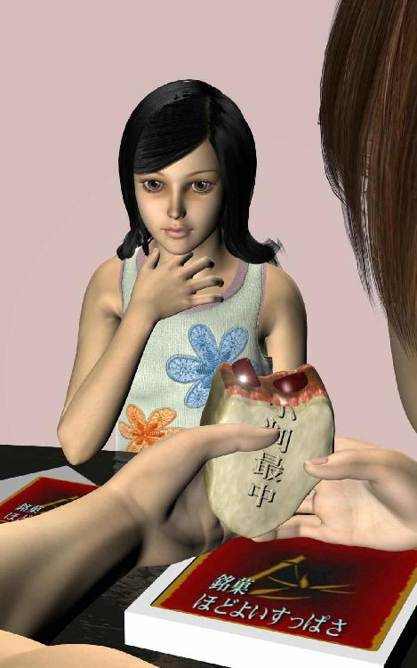
『最中』と書いて『もなか』と読む。
もちろんそんなことは知っていた。もなかといえばフカフカの皮に甘いあんこがたっぷり入ったアレのことだが、あいにく私は粒あんが好きではなかった。それで最中をあまり食べてこなかったせいだと思う。それを好きな人たちの心情をくみとることができなかったのは、そのせいだ。けっして私が悪かったのではない。
Ｆ子が私の前であんまりおいしそうに最中を食べていたせいもあったろう。今から考えれば魔が差したとはこのことだったのかもしれない。しかしそのとき私はまだ無垢な心を持つ天使同然だったから、それで後先を考えず、つい彼女に冗談を言ってしまったのだ。
「ああ、君のその粒あん、何かに似てるね」
Ｆ子はいつものように私のその言葉を無視しようとしたのだが、ふとつられて自分が頬ばっているあんこを見てしまった。
見たのはもちろん自分の両手でつかんでいる半分がた欠けた一個の最中。どこにでもある小判型をしたごくオーソドックスなお菓子だ。欠けている半分はＦ子のぽっちゃりふくらんだ頬の内側に入っており、残りの半分の黒い断面がいま彼女の目の前にある。
さくさくの皮は餅米を加工したもので、その中にめいっぱい詰まっているのが黒いあんこだ。粒あんだからところどころに小豆の原型をとどめたものが顔をのぞかせている、のは別に説明するまでもなく珍しい光景ではない。
それでＦ子はその小豆をしばらくまじまじと眺めていたが、やがて何？ という警戒心に満ちあふれた大きな瞳を私に向けた。無言なのは口いっぱいにあんこを頬ばっているからというよりも、私に話しかけるのが面倒だからだ。
一つ屋根の下で一緒に暮らしている相手にその態度はないだろうとも思ったが、いつものことなのでいまさらそれをとがめることはしなかった。私は彼女と違っていい歳をした大人なのだ。年下女性の傍若無人なふるまいにもぐっと心を落ち着けて堪え忍ぶことができる。
だからさ、と私はていねいに繰り返した。
「君のその黒い粒あんの粒は、何かに似ているだろう」
彼女は一瞬そのつぶらな瞳に怒りの色を浮かべたが、私の相手をするのはもううんざりだという態度でまず口の中の最中をゆっくりと飲み込んだ。のどがごくんと動いて粒あんがお腹の中へ移動したのが分かる。
それから彼女は舌足らずのまだ若い声でぶっきらぼうにささやいた。
「似てるって何が」
さっそくそれに答えようとした私の言葉をさえぎって、押し殺した声をつけたす。
「またおかしなこと言ったら、お母さんに言いつけるから」
ふっと私は唇に余裕の笑みを浮かべた。君と違って子どもじゃないんだからお母さんに言いつけられても大人の私は痛くもかゆくもない。だいいちそのお母さんはＦ子の母親であって私の親ではないのだから、なおさらだ。
私には何もおそれるものはない。それで当初思ったとおりの言葉を口に出そうとした。
「おいしそうに君がいま食べているその黒い粒々がさ、何かの卵に似ているんじゃないかなあってことさ」
卵って何の？ と言いたそうな彼女の顔に浮かんでいるのは不審さをむき出しにした警戒の表情だ。瞳にきらめているのはあいかわらずいらいらとした嫌悪の感情だが、さいわい何の卵かまだ分からないらしく、私の次の言葉を待っている雰囲気もある。
おや、ひょっとしてこの娘は黒い小豆がすごくよく似ている何かの卵を知らないのだろうか。まだ若いから現物を見たことがないのかもしれない。そうか、今は衛生観念が優れているから、昔は台所の片隅でよく見かけた黒い昆虫の卵に遭遇したことがないのだ。
「卵って？」
今度ははっきりと発音した声に疑問の響きが。顔つきからあいかわらず何の卵か分かっていないのが哀れだが、反面なにごとにも動じない最近の若い娘特有の愚鈍さを感じてしまう。
さすが平成生まれ！ と私はむしろ感心した。昭和の世代であれば小豆に似た黒い卵といわれただけですぐあるものをピンと連想するはずなのに、これだけ待ってもまだ分からないとは。
若さとは罪だなと私は思った。しかしその答えを聞いたとき、彼女の罪はたちまち罰へと転じるだろう。結果を待つまでもなく、そうだ、これは彼女に与えられた残酷な罰なのだと、ふいに私は天啓を受けた。
最初は単なる冗談のつもりだった。いや、普段から私を邪魔にしている愛想のない姪に対する軽い嫌がらせの気分がまじっていたのかもしれない。それを私はすなおに認め、普段から繰り返している大人げない行為を謙虚に反省してもいい。あるいはいい歳して働きもせずぶらぶら遊んでいる私へ、常に厳しい視線を投げかける世間知らずなこの幼い少女に対するささやかな仕返しだったのかもしれない。
それとも飯ばっか食らって家に少しの金もおさめないじゃないのといつも私をもてあます実の姉、その姉に対する無意識的な引け目が思いがけない攻撃性へと転化され、しかもその矛先が彼女の大事な一人娘であるＦ子へと向けられてしまったせいなのかもしれない。
しかしそれらすべての動機は私の表層的な理由にすぎず、真実はＦ子に対する天罰だったのだ。
ならばもしここに神がおわしますならば、私は頭をたれ、涙を流して彼に許しを乞うたろう。お願いします、どうかこの哀れなおつむの弱いおなごにゴマ粒ほどの知恵をお貸しください、と。すると神はそんなふうに力なくうなだれる私へ優しいまなざしをむけ、おごそかな声でこう告げるに違いない。
――だから言っちゃえよ、早く。
神が私をうながしている。私はクリスチャンではなく仏教徒なのだからどうして神なのかなとも思うが、この際そんなことはどうでもよろしい。
私は意を決してその禁じられた言葉を口にした。
「ゴ......」
いやまだだと、私はあやうく自制した。危なかった。ほら、今にも破裂しそうなほど不機嫌な顔で私をにらみあげているＦ子のどんぐり眼と、そのすぐ前で大事そうに両手で捧げ持っている食べかけの最中が私にささやいているよ。
――まだ早いって。
なぜなら、この娘はまだ食べ終わっていない。私の禁じられた言葉が神の罰だとするならば、すべてこの娘が彼女に与えられた罪をすっかり全部たいらげてから、それから初めて確実に、間違いなくその罰はくだされねばならない。そうでなければ完全なる罰にはなるまいし、完全なる罰なくして完全なる罪の許しはありえないだろうからだ。
「ゴって何？ 何の卵なの？」
相変わらずこの娘は何も知らない。無知が罪だということをこの幼い娘が知るとき、そのときこそ真なる神の鉄槌がくだされるのだろう。だからそのときまで、私はやさしく彼女を言葉でさとせるだけなのだ。
私は言った。
「ゴ、ゴ、ゴ、ゴジラ対モスラの卵は大きかったよねえ」
「あれはマユでしょ」
ああ、そうだったかな。私は少し気勢をそがれた。そういえばそうだったかもしれない。モスラは蛾の怪獣だったから、ありゃ卵じゃなくてマユだったか。それにしてもこの娘はいつもこうやって私の間違いを的確に指摘し、せっかく調子に乗って空高く舞い上がった私の純粋な心を情け容赦なく叩きのめすのだ。まるで悪魔のように。
確かにこの娘の妙に整った顔立ちはまるで悪魔のようだなと、私は思った。しわ一つないつるりとした肌や赤い頬はまだ子どもだから仕方ないのだが、ときどき不審な横目で私の挙動をうかがう嫌みな仕草は母親に似ている。そうだ、姉に似ているのだこの娘は。
「で、ゴって、なんなの？」
面倒くさそうに私へ答えを迫るその上から目線の傲慢な物言いもまるで姉にそっくりではないか。
私は震撼した。姉には小さい頃からよくいじめられた。その悪魔のような姉にそっくりだったのだ。どうりで私に対していつも厳しい視線を向けるはずだ。姉の生まれかわりだったのだから。いや、姉はまだ死んでないけど。
ならばやはりこの罰は完璧に実行されねばなるまい。そうでなければ何十年もの長きにわたって姉から虐げられてきた私があまりに惨めではないか。そう思った私はもはや躊躇なく神の残酷な罰を遂行できる実直な小羊となっていた。私はいまようやく情け容赦ないほど慈愛に満ちた神の忠実な僕と化すことができるのだ。
「ささ、遠慮せずにたべちゃいなよ。まだ最中いっぱいあるし」
私はテーブルの上に置いてある箱からまたひとつ最中の包みをとった。適当に包装紙を破いて中身をとりだす。これは看護師をしている姉が懇意にしている患者さんからいただいたものだ。姉が家を出る前、三時のおやつにしちゃっていいよと言われたので、日曜日の昼間っから二人してのんきに食べているのだった。
ちなみに姉は休日出勤でこの家にはいない。旦那はわけあって行方不明なので、いまこの家にいるのは私と私の目の前にいるこの小生意気な娘だけなのだ。
私が素知らぬ顔で最中にかぶりついたので、Ｆ子もつられてもう一口かじった。もぐもぐとその小さな口を動かしながらしげしげとかじったあとを眺めているが、あんこの断面には小豆の粒々がみえるだけだ。ごく普通の最中に違いない。それで私は再び罰の遂行を始めた。
「キ......」
と私はつぶやいた。するとすかさず娘が言うのだ。
「え、なに？」
最初にゴ、その次にキ、そしてその禁じられた言葉があらわす生き物の卵に似た、茶黒い色と俵の形をしたのが小豆の粒。もはや説明する必要はあるまい。
「ゴ、キ......」
ああっ、彼女が私をにらんでいる。小さな顎と妙に赤い唇の動きを止めて、さすがのＦ子もようやく気づいたのに違いない。ここまで言えば誰でも分かるだろう。小豆に似た昆虫の卵、それはつまりそう、ゴキ......。
そのときピンポンとチャイムがなった。振り返るとドアモニターが点灯して、カメラの向こうに帽子と作業服を着た年配の男性が立っている。手に持っているのは小さな箱だ。反射的に立ち上がってスイッチを押し、どなたですかと問えば宅配便でーすとの歳に似合わぬ元気な返事。
私はあわてて玄関に向かって荷物を受け取った。送り主の名前は知らない人だったが、姉宛だから中身は仕事先のお中元かお礼の品っぽい。なんだろうと思いながら台所に戻ると、Ｆ子は頬をふくらませてむしゃむしゃ口を動かしている。そうして勢いよく席を立つと私を無視して階段を一散に駆け上がっていった。自分の部屋へ戻ったようだ。
テーブルの上は最中の箱が散らかりっぱなしで、少しは片付けとけよな、と注意したいがやめておいた。私もよくやって姉に怒られるからだ。
私のイスの前にかじりかけの最中が残っていたので、包装紙を片付けながらそれを口の中へ放り込んだ。さっきよりちょっとすっぱい味がしたがそれは気のせいだろう。賞味期限はすぎていなかったし、箱を開けたばかりの新品だ。
ほどなくして姉が帰ってきたのでこれ届いたよと荷物を渡すと、代わりに白いビニル袋を渡される。コンビニで弁当でも買ってきたのかと中身を確かめれば、ゴキブリ駆除の缶スプレーだった。
「あれ、食べ物じゃなかったのか」
姉はやはり娘と同じく不機嫌な顔だ。
「あんたは食べることばっかりだね」
「いやそういうわけじゃないけどさ。ほら、ゴキブリって最近見かけないだろ」
私の脳天気な物言いがよけいシャクに障ったのか、ぶっきらぼうに答える。
「なにいってんの。あったかくなるとすぐに卵を産んで増えるのよ、アレは」
へえ、と私は返事しただけだ。確かにアレはそういう習性だ。しかしさっきのＦ子の様子から、最近はあんまり見ないものだとばかり思っていたけれど。
姉はさっそくスプレーのビニル包装を破いてテーブルレンジの裏側にそれを噴射した。
「今朝も卵みつけちゃってさ、あんたまだ寝てたから知らないんだろうけど、Ｆ子が気味悪がってうるさかったんだから。ほら、あれって小豆そっくりじゃない。こんなところに小豆が落ちてるって拾おうとするもんだから、あわててとめたのよ」
ほうと、私は思った。さっきの様子から知らないとばかり思っていたのに、Ｆ子は今朝見たばかりだったのだ。
「あの子甘いもの好きでしょ。粒あんも死ぬほど好きじゃない。それでちょっとショック受けてたみたい」
大げさなやつだなと私は内心あきれた。昭和だろうが平成だろうがゴキブリの卵なんて珍しくもないってことか。じゃあやっぱり知っててとぼけてたんだな。相手をするとよけいからかわれると思って、それで最初から知らないふりをしていたのだ。うまくごまかされてしまって残念無念。
振り返った姉はテーブルの上にある空の箱に気づいたようだ。一個も残っていない。
「あんた最中嫌いだったじゃない。あの子ひとりで全部食べちゃったの？」
「いや、一個だけ俺も食べたよ」
今しがた最後のひとかけを口に放り込んだばかりだ。ちょっとかわった味がしたけれど、吐き出すのはもったいないのでむりやり飲み込んだ。
私の返事を無視した姉は面倒そうにシンク下の収納庫にスプレー缶をしまいこむ。とたんに怒った声をあげたので背中越しにそれをのぞくと、しゃがんだ姉の視線の先には小さな小豆が。
「こんなところにも」
ふうんと私が返事をすると、また別の場所で姉の押し殺した悲鳴があがる。いったんしまったスプレー缶を再び手にとって、姉はわめいた。
「こうなったら家中全滅させてやる」
なるほど、けっこうあちこちにゴキブリは卵を産んでいるのだ。
その夜、なぜか私はベッドの中でお尻からゴキブリの子どもを産む夢を見た。次々とお尻の穴からでてくる子ゴキブリは寝ている私の体から放射状にきれいな円を描いて部屋の隅に散っていく。
するとどこからか一匹の大きなゴキブリがはい出してきて、私の大口開けて寝ている枕元でていねいに頭をさげるのだ。
――おかげさまで、なんとかこの子たちだけは無事でございました。本当にありがとうございました。
もう一度ていねいに頭を下げた親ゴキブリ（母）はそそとお尻を揺らして再び部屋の隅の暗がりへと消えていく。その後ろ姿を見送りながら、ああ、よかったねえと私は安堵の涙を流したのだった。
が、それはたんなる夢だったのだと思う。
その翌朝、Ｆ子が起きたばかりの私へおそるおそる小声をささやいた。どういうわけか視線をそらせたままだ。
「あれからお腹どう？」
いや別になんともないなと答える私に、Ｆ子は恐怖と嫌悪と尊敬のまなざしをむける。それ以上は口を閉ざして。
どうしてかはわからないけれど。
（第一話 終わり）
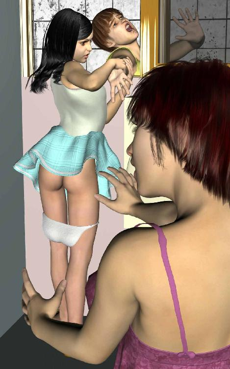
家の外壁からシャワーが噴き出しているのに気づいて、私は自分の目を疑った。
シャワーと呼べるほど激しい勢いで噴き出しているわけではないのだが、細かな霧状の水流はけっこう量があるようで、すぐ隣に建っているコンクリートの塀をはっきりと黒く濡らしている。
最初から説明すると、初夏の雲ひとつないさわやかな晴天の日に、なぜかコンクリートの染みが目立っているので、不思議に思って家の横の狭い場所へ苦労して潜り込んだ。それでやっと外壁からシャワーのごとき細かな霧が噴出しているのに気づいたのだ。
そんな馬鹿なと最初は思った。昨日今日と雨は降っていないし、だいいちどうして家の壁から水が噴き出しているのだ。奇跡の泉がわいたのだとしても、よりによってこの家の外壁から......。
じっとその不思議な現象を眺めていると、少し横手にある頭一つ分高いところの窓がいきなりガラリと激しくあいて、おそるおそるこちらをうかがう何者かの気配がある。誰かと思ってよく見ればＦ子のどんぐり眼が窓の向こうから私を凝視しているのだ。
「......オジサン、ヤメてよ」
おさえた小声に信じられないという顔をしてにらんでいるのは私の顔だ。なぜかは分からないが物凄く怒っている。若い娘からトゲのある軽蔑の視線で見下されるとは、心外な反面ちょっと嬉しくもある。
「なんだよ、ヤメろって何を？」
私は普通の調子でたずねた。対してＦ子はケンカ腰だ。
「何をってきまってるでしょ、このヘンタイ」
お、実の叔父を変態扱いとはどういうことか。Ｆ子の部屋は二階だし、風呂場はもっと奥でこのあたりは洗面所か廊下のはずだ。つま先だって窓の向こうをのぞき込もうとすると、悲鳴をあげてぴしゃりと窓を閉められた。鼻先をはさまれたかと思ったが、つまんでみれば幸い無事だ。
今のはちょっと危なかったろうと私は少し腹を立てた。それでむりやり外からその窓を開けようとすると、Ｆ子はあわてて向こうからその窓を閉めようとする。あいかわらず傍若無人なその仕草に、私は『そうはイカのキンタマゴ！』と叫びながら窓をこじあけ、隙間へ強引に右腕を突っ込んだ。
ところがＦ子はおかまいなしに窓を閉めるものだから、挟まれた私の右腕に激痛が走る。痛さのあまり指先を痙攣させながら、なおも窓の奥深く肩口まで力任せに侵入すると、Ｆ子のほうが先に悲鳴をあげる。
「きゃー、お母さん、ヘンタイ、ヘンタイがでたよ、お母さん！」
挟まれた私の右腕がとても痛い。窓の位置が頭一つ分高いのと家の外壁とコンクリート塀に挟まれた微妙に狭い隙間だったせいか、妙な具合に体をひねってしまって右肩の関節をきめられたような状態になってしまった。身動きができない。
「Ｆ子、Ｆ子、窓を開けてくれ、窓を......」
激痛にうめく私の声にＦ子は、
「お母さん、早く早く、本物のヘンタイがでたんだから！」
ああ、いったいこの娘はなにを叫んでいるのか。実の叔父をいきなり変態扱いして、いくらなんでもそれは失礼だろう。それどころか私の右腕が肩からもげそうだ。体も動かせないし、冗談でなく気分が悪くなってきた。
「なんなのＦ子、たまの休みなんだから、ゆっくりさせてちょうだい」
どうやら姉貴が来たようだ。早くこの自意識過剰にして情緒不安定なあなたの分身を取り押さえて、おとなしくするようきつく叱ってやってくれ。
Ｆ子が私の右腕を引っ張ったまま窓から体を離してなにやら金属をカチャカチャやらかしている。ドアが開く軋みがして、同時にああっと息をのむ姉の気配が伝わってきた。
ようやく窓に挟まれている私の右腕に気がついてくれたのだ。いかに愚かな自分の娘だとて同居の叔父に対するこのような乱暴狼藉、はっきりと叱っておかねば教育上よろしくないことぐらい分かるはずだ。ところが、
「Ｆ子、なにやってるの、早くパンツをあげなさい」
なんだってと、私は自分の耳を疑った。パンツをあげなさいとはどういう意味だ。それはつまり私にＦ子のパンツをくれるという意味なんだろうか。またどうしてそんなサービスを、この状況で。
驚く私の右腕に再びの激痛が、いててててとうめいても一向に手加減する気配はない。それどころか腕をいっそう激しくねじあげる相手の力が変わって、どうやらいま私の右腕をねじっているのはＦ子ではなく姉の両手のようだ。
母子で交代しつつ私にこのようなむごい仕打ちを続けるとは、いったいどうしたことなのだ。
「Ｓ代、Ｓ代、俺だ、Ｆ子のパンツをくれる前に、まずこの腕を離してくれ」
痛みで私の声がかすれていたせいだろうか、それとも右腕をひねられていて自分の顔を窓越しにみせられなかったせいだろうか、姉は相手が私だと気づかなかったようだ。それで私を他の誰かとかんちがいしてしまったらしい。
「ええっ、Ｆ子のパンツをくれって、まさか、あなたなの？」
「そうだよ、俺だよＳ代、俺なんだよ、だからＦ子のパンツ......」
はいいから早く腕を離してくれと言いたかったのだが、その前に姉の興奮した声が私の弱々しいうめき声をかき消した。
「ウソ、あなたがここにいるはずないじゃないの。だいいち生き返って戻ってきてもＦ子のパンツはあげませんよ！」
あなたって誰のこと言ってるのか知らないけれど、そんなに大声で叫ぶこともないだろう。さらに疑問点を付け加えれば、さっきはＦ子にパンツをあげろと言っておきながら、今度はやっぱりあげないってのはどういうことだ。
苦しい息の下から、私は血を吐くような思いでゆっくりとささやいた。
「パンツをあげるのかあげないのか、はっきりしてくれ......」
姉はそんな私の言葉をもはや聞こうともせず、なぜかひどく狼狽して取り乱しているようだ。
「ああ、こんなことになるのなら、いっそのことあげるのだったわ......」
しくしくと泣き出したようだ。私のねじれた掌に、こぼれた涙の濡れた感触がある。いったい姉は何を勘違いしているのだ。あなたというのはどうも行方不明になった旦那をさしているような気もするけど、父親が娘のパンツをもらっても普通は嬉しくないだろうに。どうなのよ。
ところで私の腕が本当にもう我慢できないほど痛くなってきたので、そろそろ勘弁してくださいとこちらのほうが泣きを入れたくなった。
するとＦ子の押し殺した声が聞こえてくる。
「違う違うお母さん、Ｍオジサンだよ。お父さんじゃないって」
そのとたん姉の口から安堵のため息らしきものがもれた。ようやく自分の間違いに気づいたようだ。
「え、なに、Ｍ雄なの？ Ｓ代だなんて偉そうに呼び捨てるもんだから」
突然私の腕が自由になった。姉がつかんでいた腕を離してくれたのだ。しかし体勢が不安定だったせいか、私はそのまま地面に倒れ込んだ。幸い頭はうたなかったのでそれ以上の怪我はしなかったのだが、顔面が草やら土やら風に吹かれてたまったビニル袋の固まりやらに容赦なくめり込んで気持ち悪かった。
窓の向こうから安堵にゆるんだ姉の声が聞こえる。
「安心したらお母さんおしっこしたくなっちゃった。Ｆ子はもうすんだの？」
「うん、もういい」
「そ、じゃあ私が使うわよ」
「ええ？ またあのオジサンのぞこうとするよ」
がらりと窓が開いて姉の声が上から降ってくる。
「Ｍ雄、今度のぞいたらこの家でてってもらうからね」
言い捨てざまバシっとガラスの閉まる音がして、すぐにロックをかける金属音がする。
そうか、この窓はトイレの窓だったのだ。そういえば廊下の突き当たりと洗面所の間に小さな個室があったのだった。パンツをあげろっていうのはパンツをはけという意味だったのか。
それは失敗したなあと、私は地面に倒れたまま激しい後悔の念にかられた。トイレをのぞくつもりなぞ毛頭ないのに、これでは誤解されたままだ。しかし今さらどうにもならない。あの母娘なのだ、どんなにていねいに弁解しても絶対私の言い分を聞き入れてはくれまい。もう遅いのだ、なにもかも......。
股のあたりが激しく冷たいので下をみると、外壁から噴き出す水しぶきが私の下半身をびたびたに濡らしている。そうか、分かった。壁から水が湧いているのではなく、換気用に開けてある土台の隙間から水が噴いているのだ。床下なのか壁の中なのかは分からないが、家屋内の水道管に亀裂が入っているのに違いない。
はやく水道屋さんに連絡しなければと思うのだが、私の右腕はまだ痛くて力が入らないし、たとえ入ったとして家も塀もコンクリートの壁にとっかかりはない。頼りの左腕は自分の体の下敷きになっており、倒れた全身が外壁と塀の間に挟まれてどうにも動けない状態になっている。
本当に動けない。では誰か助けを呼ばなければと思いながら、同時にもうどうでもいいやとつぶやく自分の哀しい声が頭の中の暗い底からわいてくる気もする。
私は耳を澄ませた。姉が立てるじゃぼじゃぼとした水音がかすかに響き、そのあと水洗トイレがたてる排水の軽いうなりが伝わってくる。ドアの開いて閉まる乱暴な物音がすると、そのあとはもう何の振動も聞こえない。
そのうちじいじいと鳴き騒ぐ虫の音が静かに始まり、目の前にあるのは草葉を吹き抜ける風にがさがさと音立てる土まみれのビニル袋のみ。
Ｓ代姉さんも姪のＦ子も、もはや私の存在を忘れてしまったようだ。日常に埋没した彼女らは平凡な世事にかまけ、いまここに横たわる一人の誠実な男を見失ってしまったのだ。彼女らの瞳は盲目だ。どこに真実が潜んでいるかも気づかずに、ただ己の感情だけを信じて誤った認識におぼれている。
Ｓ代、Ｆ子、私は無実だ......。
私の淡い思いは家屋と塀の細い隙間に吸い取られ、空高く消え去っていく。やがて遊ぶ子どもらのかん高い笑い声が近所から聞こえ、それが遠ざかるにつれあたりには漆黒の夕闇が忍びよってきた。
絶望、だがいまこそ私は歌おう、魂の詩を。
＊
お題 『水もれの夜』
ほらもうすぐ夜が来る／くらいくらい夜が私を包むよ。
私はひとり／冷たい夜の底に身をよこたえ／誰かがくるのを待っています。
ひとり寂しく待ってます。
お願いします／誰か私を助けてください。
それがかなわなければ／せめてこの水もれをなんとかしてください。
壁から飛び散る水漏れで／私のパンツがびちょびちょです。
パンツの中身もびちょびちょです。
腐ったパンツの中身から／小さな根っこがうねうねと／うねうねと、
のびるよのびるよ／うねうねと。
地球を一周七まわり半、
やあ、こんにちは、
君は光より早いんだねえ。
さくたろう
（第二話 終わり）
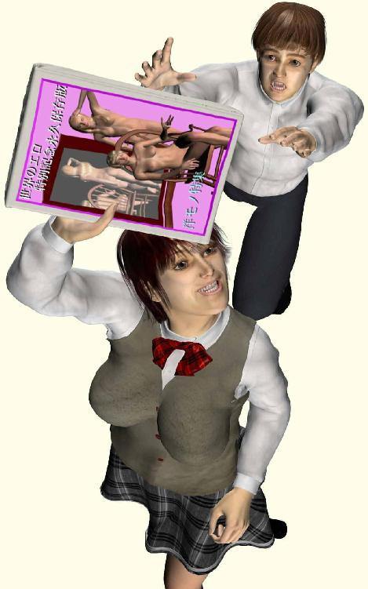
そういえば姉貴の旦那の行方がいっこうに分からないのはどうしたことか。
突然家からいなくなって、勤め先の医療機器メーカーにも取引先の大病院にもどこにも行っていないそうだ。しばらく待っても音沙汰なしで、これは誰かに拉致誘拐されたんじゃなかろうかという話になった。それで旦那の両親がたずねてきて姉貴と相談した結果、警察に失踪届を提出したらしい。
事件性があれば警察も真剣に捜索してくれるはずなのだが、勤めていた会社や取引先とはなんのトラブルもなく、本人は特に他人の恨みをかうこともない温厚な人柄だったため捜索のとっかかりすらなく、結局最後には様子見すなわち放置という事態になった。
「どうもこれは自発的な家出のような気がしますなあ」
と近所の交番のおまわりさんが結論をくだしたわけだ。
途方に暮れる姉はしおらしく下を向いているが、内心激しくいらついているのを私は知っている。失踪した旦那に怒っているのかそれとも他人事のような物言いの中年警官に不満があるのかは分からないが、ともかく陰で私に怒鳴り散らすほど平常心を欠いているのは確かだ。
「奥さんになにか思い当たる節があればいいんですが、これでは私らとしてもちょっとねえ......」
「Ｓ代さん、本当に心当たりはないのか」
横からせわしなく口をだしたのは旦那の父親だ。この男は定年退職したばかりのまだ元気な老人で、長く役所勤めをしていたせいかいわゆる昔の役人ふうに愛想がない。大事な一人息子が原因不明の失踪で心穏やかでないのは分かるが、嫁に対して少し詰問口調になっている。
「いいえ、まったく......」
姉は途方に暮れた嫁をよそおったまま、うなだれた首を小さく横へふるのみ。
いっぽうその脇でじっと姉をにらんでいるのは旦那の母親だ。テレビ通販で流行のウィッグをつけ髪を茶色く染めている。そのせいかそれほど年寄り臭くはなく、まだ現役の主婦だといっても通じる。
細面の顔立ちに銀縁の眼鏡がなにやらキツネのようで、その鋭い目線がひたと姉にすえられているさまは、ふつふつとたぎる怒りをむきだしてねちねちと嫁をいびる意地悪な姑としか思えない。
十年前、義理の親との同居を嫌ってなかば強引に夫方の家を飛び出した嫁に、それ以来ずっと敵意を燃やしていたのに違いない。
「だからあのとき私は言ったの、Ｎ太はおとなしい子だから、Ｓ代さんのようなはっきりした娘さんとは性格があわないって」
ささやいている相手は自分の配偶者なのだが、その針のような横目が見据えているのはうつむいた姉の顔だ。もちろん声もはっきり聞こえているから、その場にいる全員がかなり気まずい雰囲気になった。
「私たちと一緒に暮らしていれば、こんなことにはならなかったのに、ああかわいそうなＮ太ちゃん......」
そこで母親はわざとらしく泣き出した。姉が申し訳なさそうに頭を下げたが、内心ちっと舌打ちしているはず。姉側の助っ人で呼ばれた私はなすすべなくテレビドラマのような光景を無責任に眺めていられるだけだ。
Ｎ太兄さんはいったいどこへ行ってしまったのだろうと、私もまたあきらめの心境で嘆いた。
大事に育てられた一人息子らしく、つねに茫洋とした人柄に密かな好意を抱いていた私は、義理の兄の失踪をたいへん残念に思った。姉の気晴らしをかねた怒りの矛先がＮ太兄さんに向いている限り、私は安全圏にいられたのだ。
ところがその標的がいなくなってしまったので、最近ではもっぱら私が姉のストレス発散につきあわされている。それだけではない、姉に生き写しの性格をもって生まれた小生意気な娘のＦ子まで私につらく当たるようになってきたのだ。
早く帰ってきてくれＮ太、これでは次に失踪するのは私になってしまう。
「じゃあそういうことで、また何か変わったことがありましたらご連絡ください」
中年の警察官が要領よく区切りをつけてこの家を去ろうとしている。他の仕事もあるからいつまでも家出ごときにかかわってはいられないのだろう。相手が若い女性ならともかく、四十超えた大の男が失踪ではこれ以上面倒なのもうなずける。
警官が帰ったあと、気分が悪くなったと訴える姉の義母を二階の寝室へ案内した。一緒についてきた義父も休むというので、姉夫婦の寝室はその二人に占拠されたことになる。
ごゆっくりと言い残し階下に戻れば応接間には誰もいない。それでダイニングキッチンをのぞくと姉とＦ子が額をつきあわせてなにやらひそひそ話をしている。戸口からのぞく私の顔に気づいて、ふいに口をつぐんだ。
ああ、感じが悪い二人だなあと思ったが、いつものことだ。それでこっちも二人を無視してテーブルの脇を素通りし、冷蔵庫を開けた。その奥の白い突き当たり手前にある脱臭剤に向かってつぶやく。
「Ｎ太さん、早く帰ってきてくれないかなあ」
姉の顔が素早くこちらを向く。何か言い返すかと思えば無言なのは、怒鳴りたいのをぐっとこらえたようだ。まだ二階には義理の父母がいるから荒げた声を聞かれるのはまずいと判断したのだろう。ならば好機到来とはこのことか。
「のほほんといつも幸せなあのＮ太兄さんが家出するなんて、よっぽどこの家の人たちを嫌っていたんだなあ」
と今度はその脇の隅の豆腐に言った。タイミングをとらえて少しぐらい嫌みをいっておかないと、私のストレスがたまってしまう。この二人に文句を言える機会はもう永遠にこない可能性があるし。
「いつもいつも姉さんたちがＮ太さんをいじめるから、それで出て行っちゃったんじゃないのかなあ」
だが意に反して姉はふふんと唇の端で皮肉に笑うのみだった。
「Ｍ雄、あんたはあのひとが本当に家出したと思ってるの」
おや、姉のこの余裕の態度はなんだろう。警察官の前で義理の父母に恥をかかされて、精神的にへこんでいるかと思えばそうでもないようだ。どうしてか。
「家出だろ？ それとも事故か事件に巻き込まれたってこと？」
姉は何も答えない。かわりにＦ子がわざとらしく鼻で笑った。
「お父さんが家出するはずないじゃない。だってお父さん、Ｆ子のこと大好きだったんだもん」
なるほど、若い娘の独善的で盲目的な思いこみがまたひとつ明らかになったのだ。ならばその誤りを早急にただしてやらねばなるまいと私は心に誓った。この愚かな子羊のごとき迷えるおなご二匹に真実の光を浴びせたおしてやらねばならないのだ。
「じゃあさ、俺がいまからＮ太さんが家出した理由を指摘してやるよ」
「あら指摘してくれるの」
二匹が顔を見合わせてこれみよがしにくすくすと笑う。こいつら最高に気分悪いなと思ったが、これは挑発だ。しかもまだ序の口の挑発にすぎない。こいつらを調子づかせるとどんどんエスカレートしてくるから、なんとかやり返さねばならない。私はいっそう強く心に誓った。
「いいか、あの温厚なＮ太さんが家出するぐらいだから、その直前にあなたがた二人が何かとんでもない挑発行為をやらかしたんだよ。ふだん温厚な人であればあるほど怒ったときは爆発してしまうから、そういうことが一度や二度、失踪前にあっただろう」
私の質問に二匹は特に反応しない。
「あのひとめったに怒らない人だから、そうゆうのはなかったわよね」
「うん、Ｆ子べつにぐれてないし」
おや、ふたりとも意外に素直だ。では質問をかえよう。
「怒っていなかったのなら逆だ。すごくＮ太さんを意気消沈させるひどい意地悪をした覚えがあるはずだ」
Ｆ子はともかく、姉は私に対してよくする。学生の頃ベッドの下に隠しておいたエロ本を親の前でさらされた。あのときはまだ若かったので自殺したくなるほどの生き恥をかかされたと深刻に悩んだものだが、いま思い出すと別にどうってことないなあとほほえましく感じる青春の一コマだ。
あ、そうだ。確か昨日のトイレ事件でＦ子のパンツがどうこう言っていたのを思い出した。
「さてはパンツだな......」
私のぼそりとしたつぶやきに、姉がぎくりとした顔をする。図星か。
「わかったぞ、原因はパンツだ！」
姉の顔を確かめれば、彼女はやはり顔をそむけている。間違っているのならもっと私を馬鹿にした表情でせせら笑うはずだから、これは大当たりしたのだ。しめたと私は思った。ならばこの機をとらえて間髪を入れず追撃しなければ。
「つまりこういうことだ。Ｎ太兄さんはなんらかの理由でＦ子のパンツを手に入れようとした。ところが姉さんはそれを拒んだので、心優しい兄さんはそれを苦にして家出してしまったに違いない。どうだ！」
どうだと言われてＦ子は、はあ？ という顔をした。
「娘のパンツ欲しがる親がどこにいるっての」
もういいかげんにしてよという顔をＦ子はする。確かに私も最初はそう思った。ところがあとからじっくり記憶を探ってみると、Ｎ太兄さんには自分の娘のパンツを手に入れなければならない危急の要件が発生したのだ。
視線を姉に返すと案の定、私の突飛な推理を否定しようともせず、深刻な様子で自分の顔を両手に埋めている。テーブルについた肘から肩と背中が小刻みに震え、私の推理が否定しようのない核心をついていたことを暗黙の内に認めている。
私の厳しい視線の先に気づいたＦ子は、はっと息をのみ目の前の母を凝視する。
「お母さん、そんな......」
驚愕するＦ子はけなげにも気丈だ。それでも自分の父親をかばおうとするのか、私に対していつもどおりくってかかる。
「なに勝手なこと言ってるの？ お父さんがそんなことするはずないじゃないの、めちゃくちゃなこと言わないで」
「いいか、Ｆ子、現実から目をそむけてはいけない。これは大人の世界の出来事なのだから、こういうことはよくある話なのだ。聞け、愚かな小娘よ」
私の自信に満ちた傲慢な態度と尊大な言葉に、さすがのＦ子も口を閉ざしてひるむ。頼りの母親は顔全体を両手に埋め、痙攣したように全身を震わせている。私の鋭い推理を否定する気力さえもう残っていないのだ。
「Ｎ太さんは精密機械メーカーの営業をしていた。一台の売り上げが何億何十億もする超高価な医療設備をセールスする仕事だ。もちろん年に二～三件しか成約できない特殊な商売だから、それで売買先の担当者から不正な要求をされても、よほど無茶なことでなければ断らないのが普通なのだ」
取引先の接待漬けや袖の下があたりまえの腐った世界。そんな相手に無理強いされたのが、おそらくは実の娘の若いパンツ。
「君のパンツを欲しがっていたのはもちろんお父さんではなかった。だが仕事上、取引相手に便宜を図ってもらうには、どうしても必要だったんだ。お父さんの苦しい胸の内を分かってあげるのが実の娘たる君の義務と優しさだろう」
「そんな......」
Ｆ子は母親にむきなおった。
「お母さん、嘘でしょ、本当はお母さん、肩を震わせて笑ってるんでしょ」
う、ひょっとしてと私も一瞬そう思ったが、しかしＦ子に腕をとられてテーブルに突っ伏す姉は確かに涙を流して泣いている。
「私が悪いの、あのときあのひとの言うとおり、Ｆ子のパンツを黙って渡していれば、こんなことには......」
なんてこった、私は驚愕した。口からでまかせくっちゃべったら本当だったとは。
「どうしてお父さんが私のパンツを？」
半ば呆然とし、実の母親を責める娘に問われ、姉はせきを切ったようにこの事件の真相を話し始める。
「あのひとが仕事でどうしても若い娘のパンツが必要だって言い張って。だけど私はＦ子のパンツは渡さなかった。大事な一人娘のパンツを売るなんて、たとえ夫の出世がかかっていても、そんなことは私にはできなかったの」
「お母さん......」
Ｆ子がもう何も言わず、目に涙を浮かべて母親の腕を大事そうに抱える。
「それで私はあのひとに言ったの、かわりに私のパンツじゃどうって。ところがあのひとはそれを断ったのよ、私のパンツじゃ......」
娘のパンツをかばった母親が自分のパンツを差し出す。自己犠牲という人間が人間として人間に対して行いうる最も尊い行為に、しかし父親がくだした残酷な決断は。
だけど、と姉は言う。
「私のパンツじゃ、臭いと染みに若さがないって、それでついかっとして......」
そのときキッチンのドアががたんと音立てた。はっと視線をそこへやれば、戸口に呆然と突っ立っているのは年老いた義兄の両親だ。
「まさかＮ太が......」
義理の母親がつぶやいて、わっと床に突っ伏した。そっと背中を抱く父親に続いて、素早く席をたった姉が自分の義母の前へ同じように膝をつく。
「ごめんなさいお母さん、私が悪かったの、許してください」
義母が体を起こし、珍しく謙虚な姉を責めるかと思いきや、意外にも義母は姉の両手をすがるようにきつく握りしめた。
「いいのよＳ代さん、あなたは間違ったことはしていないわ。悪いのはＮ太なの、だからこちらこそ許してね」
「お母さん......」
二人は互いの目を確かめつつ泣きながら抱き合った。義父も目に涙を浮かべてそんな二人を大きく抱きしめる。
やった大団円。Ｆ子のパンツが嫁姑の確執をほぐしたのだ。でかしたぞＦ子。
これで家出した理由も分かったし、Ｎ太兄さんはあいかわらず行方不明だけど、もうあとはどうでもいいや。
（第三話 終わり）
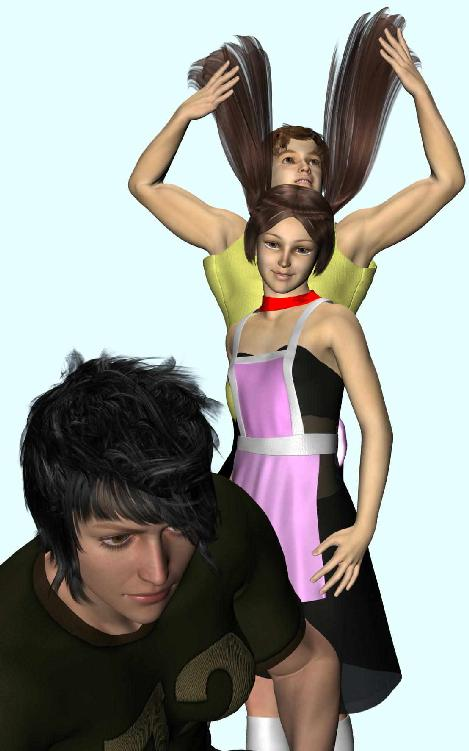
電話で呼んだ水道修理のひとがまだ若い女性だったので、正直驚いた。
若いといっても年の頃は三十前後なのだろうが、私よりはだいぶ若い。化粧っけのない顔は彫りの深い目鼻立ちで、なんだか昔みたハリウッド映画のラテン系女優に似ている。半袖作業服の肩幅と胸の筋肉（？）がマッチョで、均整のとれた長身に張り出した厚い腰、細すぎず長い手足はまるで野生の獣のようだ。
「水漏れしたって聞いたけど、どこ？」
体型と同じく言葉遣いもマッチョだが、美人なので一向にかまわない。こちらへどうぞと私は例の場所へ案内した。
昨日の朝さっそく水道局へ電話したらば市指定の修理屋を紹介してくれた。ところがどこも人手がないらしく、それで今日になってしまったのだった。
女配管工は水漏れする外壁を一目見て、この向こうには何があるか聞いてきた。
「ええと、洗面所ですね。そこの窓がトイレなので、向こうが風呂場です」
彼女は軽くうなずくと、たぶんこのあたりの水道管に穴が開いてるんだねと説明してくれた。
「床か壁かどっちか、洗面台外して穴開ければすぐなおるんじゃないかな」
たいしたことないはずだけど、念のために中を確認させてくれと言われる。
それですぐ玄関から家へあげてダイニングキッチンにある洗面所を見せると、
「ああ、ここだね。どうしよう、普通はもうひとり連れてくるんだけど、今日は私しか手が空いてなくて。運悪いと時間かかっちゃうかもしんないね」
見積もりを聞けば一日ひとりＸ万円だという。職人さんの世界なので、部品代よりも人件費のほうが高くつくらしい。
「早くすめば安くなるけど、水漏れしだいだねえ」
蛇口のパッキン替えるくらいなら私にもできるが、床や壁に穴を開けたことはないのでここはおとなしく専門家にまかせるしかあるまい。今現在もどんどん漏れている最中で水道代がもったいないし、とにかく早くやっちゃってくださいとお願いした。
「じゃあまずここを片付けてくれる？」
洗面台下の収納庫にタオルやら洗面具やらゴチャゴチャしたものがいっぱい詰まっていたので、それを段ボール箱の中へ適当にぶちまけた。姉関係の物はともかく、Ｆ子の持ち物に無断でさわると激怒されるので、彼女を呼ぶ。
あいかわらず面倒そうに階段をおりてきたＦ子は、なぜか戸口で立ち止まったまま突っ立っているばかりで一向にこちらを手伝わない。
「おおい、早くこっちきて自分の歯ブラシやらタオルやら持ってってくれよ」
Ｆ子の顔を確かめれば驚いた顔で凝視しているのはマッチョな女配管工の横顔だった。彼女も視線に気づいたのかＦ子を肩越しに振り返り、こんにちはと軽く挨拶する。その瞬間、Ｆ子は顔を隠してくるりと背中を向けると、一目さんに階段を駆け上がっていった。
あ、ちくしょうと私は思った。片付けを手伝わされるのが嫌で逃げ出したのだ。ここまで横着な女だとは思わなかった。
私は苦笑いして彼女にあやまった。
「すいませんね、挨拶ぐらいちゃんとすればいいのに」
「可愛いね、お宅の娘さん？」
とんでもない、あんな性格ブスの豆ダヌキ汁とイベリコ豚のカルパッチョを可愛いだなんて、と答えようと思ったが、さすがにそれを口に出すことはできない。
「姉の娘なんですよ。口ばっか達者で......」
姉に似てマタが緩くないか心配なんですけど、さいわい性格ブスなので誰もかまってくれないし、こりゃちょうどよかったですよね、と愉快に笑おうかと思ったがやめておいた。
これは我が家における家庭内の問題なのだ。たとえＦ子が貧相な尻と乳のかわりに、脳みそへためこんだ水と脂肪だけでゴビ砂漠を徒歩で横断できたとしても、そんな恥を世間にさらす道理はあるまい。
仕方ないのでＦ子の持ち物は別の空き箱へほおりこんでおくことにした。私の歯ブラシと一緒だとまた大騒ぎが始まるからだ。
洗面台まわりを片付けるといったん二人して外へ出て、庭先にある水道メーターを確かめた。トイレすら使っていないのにメーターが微妙に動いているのは水漏れしている証拠だ。
「とりあえず止めようか。トイレとか台所とかしばらく使えなくなるけど」
姉は仕事で家にはいないし、Ｆ子がいるけどまあいいや。表通りにでれば近くにパチンコ屋があるから、トイレが使いたければそこへ行けばいい。
「タンクに水がたまってるから、一回ぐらいなら使えるはず」
それならかまいませんよと答えれば、彼女は手を伸ばして脇のコックを閉めた。水を止めたからメーターの動きもぴたりと止まる。
家の中へ引き返してからまず洗面台下の収納庫を左右に引き開けて、彼女はその前に両手両ひざをついた。今しがた片付けたばかりの内部には排水管が上下に通っており、その左右奥には水道管が二つ奥の壁から突出している。
それぞれに蛇口がついているのは修理時に水を止めるための止水栓ってやつだろう。そこから上方の洗面台へパイプが伸びているのは素人目にも分かる。向かって右側が水で左側がお湯だ。
まず左右の止水栓を閉めてレンチで袋ナットを緩め、それぞれの水道管を外す。真ん中の排水管もレンチを使って外し、いったん立ち上がって壁の鏡と洗面台を接着している白い充填剤をカッターで手早く取り除いた。
そのままひとりで洗面台を持ち上げようとするので手伝おうとすると、いいから下がってと追い払われる。マッチョなのは伊達じゃなくて、軽々と持ち上げた洗面台を脇へ移動させるのも素早い。
洗面台の下は排水用の穴があいた床板がむきだしで、壁のほうは白い漆喰から水道管が二本つきだしているだけだ。
「さて、床か壁か、どっちかな......」
耳をすませて音を確かめる仕草をする。小首をかしげた片頬に髪の毛が一房はらりと乱れて切れ長の眼を隠した。細い眉ときれいな鼻筋が整っており、薄い唇と少し尖った顎が中性的だが、そのぶんワイルドな大人の魅力が漂っている。
あ、こりゃ化粧をしたら物凄い美人になるなと私はひそかに思った。なんでこんな欧米モデル並の美女が配管工をしているのか。
「壁じゃないねえ、床かな、とりあえず切って下をみてみようか」
何を切るのかと思えば道具箱からノコギリを取り出して、むきだしになった床板をいきなり切り始めた。少しの遠慮もないのは洗面台の下だから切り口は隠れてしまい、修理が終わればもう見えなくなるということらしい。
あっという間に床を四角く切り取ると、頭を床下に突っ込むやすぐに声をあげた。
「ああ、あった、ここだ」
顔をあげて指さす仕草をするので、つられた私も横からその穴に首をつっこんでみた。すぐ下が泥まみれの土になっていてずいぶん水漏れしていたなと思わせるものがあったが、床下を通っている水道管にそって目線を動かしていくと、分岐している繋ぎ目からきれいな噴水が二筋あがっていた。
「ウォーターハンマーでやられちゃうんだね」
蛇口を開け閉めしたときにドウンと音立てて振動するのがウォーターハンマーだ。意外と強烈な水圧が繰り返しかかるので、力のぶつかる分岐部分が疲労して裂け目ができてしまうのだそうだ。
それにしても見事な噴水だった。放物線を描いて床下を飛んだ水が、偶然そばにあった土台の風通し穴から外へ飛び出していたのだ。
「簡単にみつかって運がよかった」
あとからインターネットで調べたところによると、水漏れの場所が分からない場合はあっちこっちの床や壁を壊さなきゃならないから、家中むちゃくちゃにされたあげくとんでもない料金を請求されてもめることがあるらしい。家の外側に噴き出ていてむしろラッキーだったのだ。
場所が分かればあとは手早かった。劣化した継ぎ手を新品に替えればもうそれで水漏れはない。あっという間に交換は済んだ。
「よし、これで一度元栓開けてみて、メーターが動いてなければＯＫだから、そのままちょっと待っててよ」
洗面台はまだ外したままだが、止水栓が閉まっているので水があふれることはない。
元栓の場所はもう分かってるだろうから、彼女はひとりで外へ出て行った。すぐ戻ってくるだろうと穴の開いた洗面所を前にしてダイニングキッチンのイスに座っていると、入れ違いに戸口の向こうからあらわれたのはみたことないほど派手な化粧をしたＦ子だった。
気取ったよそゆきの声をだす。
「あら、さっきのおかたは？」
髪の毛をツインテールにしてメイドふうドレスを着ているのはともかく、目のまわりをぐるりと一周白く塗っているのは流行のメイクのつもりか。普段から小さくはない目を白くくま取っているので、まるでツタンカーメン王の黄金マスクをかぶったようになっている。横を向いて両手を左右に伸ばせばエジプトの壁画から抜け出てきた幽霊みたいだ。
「ひょっとして今まで時間かけて、わざわざそんなコスプレしてたのか」
何のためにだと私は聞きたかった。
「コスプレじゃないの。それよりね、さっきここにいらしたイケメンはどちら？」
私はそれこそどこから突っ込めばいいのか少しだけ迷った。他人の容姿をけなすのは下品だから、とりあえず基本的な誤認識からただしていこうと思った。
「イケメンって、さっきのひとは女だぞ」
ウソっとばかりＦ子は白い目をさらに大きくむきだす。
「あんなカッコ良かったのに？ Ｍオジサンより男らしかったじゃないの」
私は苦笑した。どうしてこの小娘はいつもいつも一言おおいのか。
「とにかく相手は女性なんだから、まったくもってその格好は無駄だ」
私はイスから腰を上げ戸口へ向かうふりをして、油断したＦ子の後ろへ回り込んだ。彼女の異常に長いツインテールの房を左右わっしとつかむ。洗面台の鏡にはちょうどＦ子の正面とその背後に立つ私の姿が映っている。
それを確かめてから、私はＦ子の髪の毛を上方へＶ字型にあげて元気よく叫んだ。
「ハサミムシ！」
鏡の中のＦ子と冷たい視線があって、しばらくして彼女は心底がっかりしたような深いため息を吐いた。
「......ハサミムシってゆうのは、お尻にハサミがあるの、だからオジサンのやってることは間違いなの、わかった？」
相手を小馬鹿にしたその言い方がまた腹立たしいのだが、そうか、ハサミムシはお尻にハサミがあったのか。私は自分の間違いを指摘されて少し勢いをそがれた。じゃあクワガタムシかカミキリムシにしておけばよかったのかもしれない。今度はそうしよう。
私の反省をよそに、Ｆ子はなおも私を馬鹿にした口調で言う。
「それにこの格好は無駄じゃないの。男でも女でもイケメンには違いないんだから」
しめたと私は思った。この無知で哀れなおなごの間違いを指摘し返せる。
「そりゃおかしいだろ。イケメンはイケてるＭＥＮずって意味なんだから、女じゃなくて男限定だろ」
「え、イケメンのメンは顔面のメンって意味じゃないの？」
確かにそんな感じもするな。
「それにあのひと本当に女なの？ すごく男っぽかったけど。オジサンが女性だって勘違いしてるだけなんじゃないの？」
う、そういわれると自信がない。私は最初に渡された名刺をズボンのポケットから取り出した。名前と声の雰囲気から女性だなと考えるまでもなく頭から思ってしまったのだが......。
名刺にはこう書いてある。
『××設備（有） 取締役 氷室Ｉ美』
微妙な名前だなあ......。
それをのぞきこんだＦ子が言う。
「この名前じゃわからないよね。男でもありそうだから」
ま、男でも女でもどっちでもいいわけなんだけども、ひょっとして中間の人だったのだろうか。私には関係ないからどうでもいいことを考えていると、戸口から話題の人が入ってきた。
Ｆ子がよそゆきの顔をしてにっこり微笑むが、あいにく相手は手元の何かを気にしている様子で全然それに気づいていない。Ｉ美さんは何かをつぶやいて、私に持っているそれをよこした。
「この継ぎ手、今気がついたんだけどおかしいね」
Ｔ字型のそれを手に持ってしげしげと眺めてみれば、それはさっき交換して取り外したばかりの水道用分岐管だ。よくみるとひびのあたりに何か刻印のようなものが食い込んでいる。
「これは歯形？」
のぞきこむ私とＦ子にＩ美さんが言う。
「工具がつけた傷跡じゃないねえ。生き物がかんだ痕みたいだけど、こんなにくっきりと深く歯形つけるなんて猫やネズミじゃあ無理だろうし、よっぽど大型の犬かな。どっから床下に潜り込んだんだろう、それとも最初から？」
ふうんと私は思っただけだ、そのときは。よく考えれば犬や猫が土台へ入り込むのはおかしな話だし、ネズミにしてはかなり大きな歯形だ。まるで人間がかんだみたいだが、たとえ泥棒でもよもやそんな馬鹿なことをするやつはいまい。
Ｍ子が何かを言いたそうな顔で私をにらんだが、さすがの私も床下の配管を食べようとは思わない。あたりまえだ。
すると突然ひっと息をのむ声がして、Ｉ美さんが強ばった顔で床穴を指さす。あわててそちらへ視線をやっても意味がよくわからない。
「どうしたんです？」
私の質問に彼女はかすれた声をしぼりだした。
「今、その穴から人の頭が......」
ええっと、驚いて見直してみてもそんな気配はない。
「確かに男のひとの血まみれの首が......」
血まみれの首？
私は膝をついてその穴の中をこわごわとのぞきこんだ。床下だから暗くてよく分からない。Ｉ美さんがライトを貸してくれたので、それを穴の中へ突っ込んで周囲を見回してみた。するとちらりと誰かの顔が遠く見えた気がする。
あれは......。
私はぞっと背筋を震わせて頭を引っ込めたが、Ｆ子にむりやり押さえつけられてもう一度穴の中へ首を突っ込まされた。ライトをもっと奥深くへ入れたのだが床下は意外と狭く、土台なのか構造材なのか複雑な影が多数入り組んでいて自由に見渡せない。だが確かに今一瞬、誰かの地をはう顔がずりずりとあとずさっていくように見えたのだ。
「Ｎ太兄さん？」
と私は呼びかけた。今の顔は失踪した姉の旦那、Ｎ太兄さんの顔に似ていたのだ。しかもその顔は泥と垢で汚れていたようだったけど、赤黒い血に染まっていたふうな気もする。本当に一瞬だったからよく見えなかったのだ。
「え、まさかお父さん？ そんな......」
Ｆ子の驚いた声が背後の床上から聞こえる。無理もない。どうしてこんな床下にいるんだ。しかもあんなひどい姿で。
Ｎ太兄さあんと私は暗闇に呼びかけた。だけどもうこそとの物音も帰ってこない。
Ｎ太兄さあん、兄さあん、兄さああん、あん、あん、あん、あん......。（笑）
これはいったいどういうことなんだ。ぞっと背筋を震わす私は、しかし直感した。どうやら私たちが気づかぬ間に、この家で何か異常な出来事が進行しつつあるようだ。
（第四話 終わり）
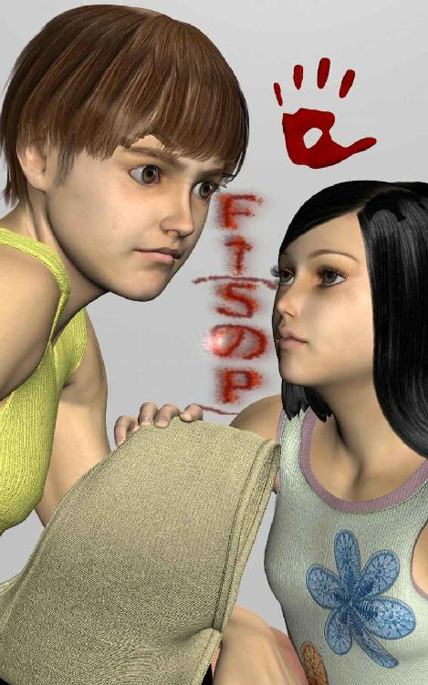
翌日の朝早々、姉のかすれた叫び声が台所から聞こえてくる。それで私は応接間の長いすの裏っかわから素早く飛び起きた。
どうしてこんなところで寝ているかを先に説明しておくと、最初は二階で寝起きしていたのをＦ子に気味が悪いと追い出されたのだ。別に私が何か悪さをしたわけではない。夜中にトイレへ行くとき階段ですれ違うのが嫌だと、例によって傍若無人なわがままをわめきだしたのだ。
「薄暗がりからゆっくり階段あがってくるオジサンの顔がすごくブキミなの」
それは確かに無気味かもしれんが、若いおなごのあまりにも無遠慮な物言いに、さすがの私も語勢を荒くした。
「実の叔父に向かって無気味とは、それはいいすぎだろう！」
「だってオジサンの顔がキモイんだから仕方ないじゃん」
「キモイってそんな......」
もちろん粘り強く抵抗したいのだが、最後にはＦ子が私に襲われそうな気がすると無茶な主張を初めたので、とうとう姉によって階下に追い払われてしまった。幸い暖かくなってきた頃だったし、寝場所を仕方なく応接間の隅にさだめざるをえなかったのだ。ちなみに長いすは意外と寝にくくて床のほうがまだ広々としている。
それで応接間から飛び起きてテーブルの角でももを打ち、戸板の角に足の小指を引っかけつつ廊下を転がりながら台所へ頭から突っ込んだ。するとパジャマ姿の姉が洗面所の前に腰を落とし、驚愕の表情で奥を指さしているのだった。
ひいいいいいいいとかすれた声を上げつつ姉が凝視しているのは、無惨にも扉を打ち壊された洗面台だった。しかもその底板が乱暴に割れ砕けていて、大きな穴がぽっかりと開いているのだ。
配管類がつながっているのでもう洗面台は動かせない。それで苦し紛れに無茶をしたのに違いない。いったい誰が？
決まっている。昨日床下に潜んでいた、あのＮ太兄さんに似た男の仕業だ。床板と洗面台の底板、そして扉を破壊し、家の中に侵入してきたのだ。では侵入者は今現在この家のどこかの部屋に隠れているということか。
突然階上から再びの悲鳴が。今度はＦ子の助けを呼ぶ声だ。私は冷蔵庫の扉を開けてドアポケットから麦茶のボトルを取り出し、冷たいそれをぐいっとのどに流し込んだ。起き抜けの一杯はおいしい。Ｆ子の悲鳴がもう一度聞こえたが、階段を上ってかけつける気力がわかない。
私が推理するに、床下からあらわれたＮ太兄さんが修理したばかりの洗面所を再びぶち破って家の中へ侵入してきたのだ。しかしこの家はもともと彼の家なのだから、どうしてそんなことをしているのだろう。それとも私の見間違いで、あれは兄さんじゃなかったのだろうか。
ふと右手につかんでいるボトルに奇妙な違和感をおぼえて、それをまじまじと眺めた。
ああ、ボトルの表面がなにかざらざらしているなと思えば、これは泥だ。ふきとったあとがあるが、じゅうぶん取り切れなかったのだろう。半分がた乾いた泥が白っぽい筋となってところどころこびりついている。視線を冷蔵庫の扉に向ければ、やはりその表面にもかすかな汚れがあった。
これは誰かが冷蔵庫を開けてボトルの麦茶を飲んでいるのか。
「Ｍ雄、Ｍ雄......」
姉がうわごとのように私の名を呼んでいる。
「どうしたんだい、姉さん」
姉の視線を追えば、開け放たれた洗面台下の収納扉の裏に、べったりと赤い掌のあとがある。血の掌紋だ。
これは......。
Ｆ子の叫び声が三たび階上から響いたが、私は冷静にまず収納扉の血を調べようと思った。血と泥で汚れた手形が扉の内側についているのは、昨日ふさいだばかりの板を突き破って床下から出てきた何者かが、内側からこの扉を掌で押し開けたという証拠だろう。そうでなければ汚れは外側についているはずだから。
念のために反対側の扉の裏側も調べてみると、そこにもやはり血の汚れがある。しかもこっちはどうやら血文字のようだ。私は少し興奮してその文字を解読しようとした。
その血文字とはこうだ。
『Ｆ←（ＳのＰ）』
いったいどういう意味なんだろうと私は思考した。ＳのＰとは何をあらわすのか。そして矢印が向いているのはＦ、いったいこれは......。
「Ｓ姉さん、これは何かの暗号だね」
私は腕を組み、あごに片手をあてて考えた。暗号だからそれほど容易には解けまい。しかしＳとＦはなんだか人のイニシャルみたいだし、Ｐというのはこれはひょっとして。
「Ｍ雄、どういう意味だと思う？」
おびえた姉の言葉に、私は重々しくうなずいた。Ｐというのはひょっとして、パ......。
いや違うな、と私は思い直した。そんな月並みな謎ではないはずだ。それだと一瞬で暗号が解けてしまうから、そんな簡単なものじゃないと思う。
「うん、わからないね。犯人はどうしてこんな複雑な暗号を残したんだろう」
階上からＦ子の四回目の悲鳴が聞こえてくる。とっさに私は冷蔵庫のドアポケットから生卵をとりだし、振り返ってフライパンに油をしき、テーブルレンジの火をつけた。軽く油を回してから素早く卵を割り、目玉焼きに塩をふる。
最近は半熟が好みだから白身が固まりしだい皿にうつし、あつあつのそれに大急ぎでかぶりついた。こんなぜいたくはひさしぶりだ。いつもは塩をふっていない白身の冷たいかけらしか食べさせてもらえない。黄身はＳ代とＦ子の大好物だから、それだけ先に食べてしまうのだ。
毎朝毎朝私の前に放り捨てられる目玉なし焼きに対して、かつて一度だけ抗議したことがある。
「姉さん、たまには目玉のある目玉焼きが食べたいんだけど」
するとＳ代は、
「なにいってんの、朝起きるのが遅いあんたが悪いんでしょ」
横からＦ子も、
「残り物には福があるっていうじゃない、Ｍオジサンよかったね」
さらにはＳ代が、
「こっちはレストランのコックじゃないんだから、嫌なら自分でつくりなさい」
続けてＦ子も、
「どっちみちいつも食っちゃ寝ばかりでお腹すいてないでしょ」
これで終わったかと思えばＳ代が、
「ここはあんた一人の家じゃないの、食べ物があるだけ感謝しろ」
とどまることを知らないＦ子も、
「どうしてそんな小っちゃなことにこだわるんだろ、大人ならもっと大きくかまえてればいいのに」
そのあとも延々と嫌みが続くのだが、その頃には私の意識はすでにテレビのワイドショーへそれているので、もう何も感じない朝の平和なひとときなのだった。
「ちょっと、Ｍ雄！」
私の名前を呼び捨てにするのは怒った姉かと思えば、戸口で仁王立ちしているのはパジャマ姿のＦ子だった。とうとう年上の叔父を呼び捨てにするまで増長するとは、大きくなったねえＦ子。
「さっきから何回悲鳴あげさせるの」
激怒している。それで私はこれ以上怒らせないよう正直に答えた。
「四回だ、ちゃんと数えてたし」
その明快な答えがよけい彼女の感情を逆撫でしたのか、顔を真っ赤にして大声をだす。
「普通は女の子が一回叫んだら、どうしたのって様子見にくるものでしょ！」
私は内心苦笑した。ほら、これだから自意識過剰な若いおなごは困る。様子を見に行くのはその悲鳴をあげた相手の身を心配したときだけだ。どうでもいい相手の場合はむしろ自分の身の危険を考慮して距離を置くのが普通である。
それにだいたいこの小娘が悲鳴をあげるのはゴキブリがでたときぐらいのことなのだ。どうしたんだとうっかり顔を出せば、かってに部屋をのぞくなといって怒られたのはついきのうのことのように懐かしい。
「じゃ聞くが、いったいどうしたんだね」
私の年長者らしく思いやりにあふれた優しい質問を無視して、Ｆ子は悲鳴をあげた理由を姉に訴えた。
「お母さんたいへん。夜中に誰かが私の部屋に入ってきたみたい」
誰かがＦ子の部屋にって、それはたぶん床下からはいあがってきたあの男に違いない。Ｆ子に用があるとは、やはりＮ太兄さんなのか。
「Ｆ子、なにかされた？」
姉が心配そうに聞くが、Ｆ子は首を横へふった。
「何も、でもこれを誰かが置いていったの」
手に持っているそれを差し出す。受け取った姉がひろげてみれば、それは真っ白なパンツではないか。しかしＦ子のものにしては異様にどでかいサイズだ。
「これは私の......」と狼狽した姉が言う。「いったいどうして？」
なんてことだ、Ｆ子の部屋にＳ代のパンツが置かれていたとは。Ｓ代の洗濯物を盗んだら、モノがでかすぎるのにびっくりして返す部屋を間違えたのかもしれない。いや、そうじゃないぞと、私は直感的に考え直した。
そうか、なるほど、さっきの暗号を解読できそうだ。
「姉さん、ひとつ質問してもいいかな」
私は言った。姉が面倒そうに答える。
「さっさと言いなさい」
私はふっと笑い、まじめな質問をした。
「そのパンツは新品だね。仮に新品でなくとも洗濯済みの比較的清潔なブツだ。そうだろう」
見りゃ分かるじゃんとＦ子が言う。その小生意気な態度をスルーして続ける。
「Ｓ代のパンツがなぜＦ子の部屋にあったのか、そして洗面台の扉裏に残された謎の暗号。この二つの事実はけして無関係ではない。つながっているのです」
私はテレビでよく見る名探偵のように言い切った。
「謎はすべてとけました」
Ｓ代とＦ子が顔を見合わせ、またかといううんざりした表情を浮かべる。二人とも毎度毎度私の鋭い推理力に嫉妬しているのだ。
「『ＳのＰ』とはつまりＳ代のパンツ、『Ｆ←』とはそれをＦ子がはけ、という意味だったのだ」
どうだ！ しかし愚鈍な若い小娘は納得しない。
「どうして私がお母さんのパンツはかなきゃならないの」
「Ｎ太兄さんにとって大切だったのは若いパンツ。しかし娘のパンツを売ることにＳ代は抵抗を感じている。だからＮ太兄さんはその妥協案として、Ｓ代のパンツをＦ子にはかせてそれを俺にくれと、そう主張したに違いない。考えに考え抜かれたすばらしい折衷案。さすが兄さんは大人だなあ」
ここにすべてのなぞは鮮やかにとけた。
ふうと、私は軽いため息をついた。見事な推理を完璧に解きえた者のみに与えられる心地よい疲労感。ここには一片のむなしさもない。もちろん徒労感などもない。あるのは周囲の人々の賞賛と感嘆のまなざしオンリー。そして私の胸奥深くからわきあがる満足感、脳内の奥深くから怒濤のようにわき上がる脳内物質。
ドーパミンがどっぱんどっぱん打ち寄せる彼岸の岸辺で、私の脳髄が喜びの涙を流している虹色の光景。
「そんなはずないわ......」
しかしなぜだか愕然とした表情をしているのは姉だ。自分のパンツを握りしめている。
「あのひとが今さらこんなことをするなんて、だってあのひとは......」
姉はふいにキッチンを走り出て、普段は物置に使っている四畳半のドアを開けた。隅に積んである衣装ボックスの山を移動させる。
「何をしてるんだ姉さん」
返事もしない姉はボックスを移動させると下のカーペットをめくる。するとそこには四角い戸口らしきものが。地下室なんてないから、これは床下を点検するときのためのものだろう。
姉はその半畳ほどの板を引き開けた。おそるおそるその下をのぞきこんだ姉は気絶しそうな様子で腰を抜かす。
「いない、やっぱり」
「どういう意味なんだい」
姉は答えない。青ざめた顔を床に突っ伏して、全身を細かく震わせている。正直またかと思ったが、今回は泣いているわけではない。あまりの恐怖にうちふるえているのだ。
「姉さん、どういう......」
しかし姉は何も答えてくれない。首を左右に打ち振って、顔を伏せて黙り込むのみ。いないとはどういう意味なんだ。こんな床下に、姉さんはいったい何を隠していたのだ。そしてなぜそれがなくなっているのか。
そういえば姉はあのとき何と言ったか。姉の義父母がこの家へ来たとき、確か姉はこう言ったのだ。
『私のパンツじゃ、臭いと染みに若さがないって、それでついかっとして......』
かっとして、何をしたのだ、Ｓ代姉さんは。
そしてその少し前、私が外壁からの水もれを発見し、Ｆ子に腕をはさまれたときも、確か姉さんはこう言ったはずだ。
『ウソ、あなたがここにいるはずないじゃないの。だいいち生き返って戻ってきてもＦ子のパンツはあげませんよ！』
生き返って戻ってくるって、それじゃＮ太兄さんはもう死んでるみたいじゃないか。まさかＮ太兄さんを、Ｓ代姉さんが......。
私はその穴にかがみこみ、無造作に捨てられている黒いビニルのゴミ袋を拾った。中身は確かめるまでもなく空だ。しかし手を入れて、中にどろりとした粘液がたまっているのに気づいた。おそるおそる汚れた指先を確かめれば、これは赤黒い、血？
姉は答えない。だが何かおそるべき真実を隠しているようだ。姉さんと、そしてＮ太兄さんの間に何か知られざる重大事件が起こっている。
なんてこったと私は唇をかんだ。ここでは口にできないほどおぞましい出来事が、こんな平和な町中の、しかもよりによってこの家で起こってしまったとは。
おそらく、Ｎ太兄さんはもうすでに......。
（第五話 終わり）
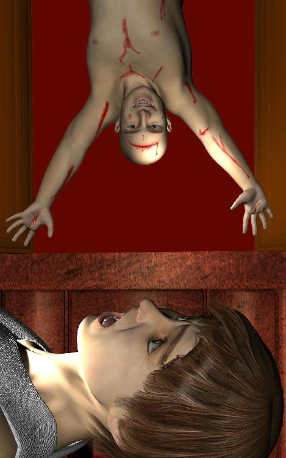
夜中にクローゼットの扉が静かに軋んで、その中から幽霊の白い顔がぼうっと浮かび上がる。そう妄想したことはないだろうか。
その幽霊は白い顔に真っ黒な瞳を持ち、細い目を裂けんばかりに大きく見開いてこちらの顔をじっとうかがっているのだ。唇はうらみがましくひずめられ、かすかに震えているのは何かを訴えようとしているのか。
しかしこの光景はちょっと違う。大きく開いたクローゼットの奥から私の寝顔をのぞきこんでいるのは、さかさにつり下がった中年男の赤黒くむくんだ顔なのだった。
「......Ｍ雄くん......」
ああ、確かにその幽霊が呼びかけているのは私の名前だ。
「Ｍ雄くうん......」
私を呼んでいる。赤黒くさかさにひずんだみにくい顔は、額がぱっくり割れて血がしたたっている。ぽたりぽたりと落ちるしずくがクローゼットの底にあらたな血だまりを作り始めている。
私は返事をするべきかと思い、だが開きかけた唇を閉ざした。霊の呼び声にけっして答えてはならない。もしうかつに返事をすれば、返事をした者が霊にとりつかれてしまう。そういう噂話を聞いたことがあるからだ。
「Ｍ雄くうんくうんくうん......」
しつこく呼びかけるＮ太兄さんの幽霊に対して、私は床の上で金縛りにあっているのを幸い、寝たふりをした。
「どうして僕を無視するんだいＭ雄くうん、起きてるんだろう。だって目を開いてこちらを見てるじゃないかあ......」
ああ、本当だ、お互いガン見してるのに、寝たふりはどうにも無理だった。
「それにＦ子はどうしたんだい？ ここはＦ子の部屋だろう」
Ｎ太兄さんこそ、どうしてＦ子の部屋のクローゼットの奥で、顔だけさかさになってるんですか。と声に出して質問したいのだが、今しゃべってはこの幽霊にとりつかれてしまうので、けして口を開いてはいけないのだ。
しかしＮ太兄さんはそんな私の心理的葛藤を気にかけもせず、おかまいなしに話しかけてくる。
「Ｍ雄くうん、ところでＦ子はＳ代のパンティをはいてくれただろうか」
この状況でいきなりそんな話題をふるとは、さすがＮ太兄さん。パンツのことをパンティと本格的な英語を使用するだけあって、あいかわらずの国際的知性派だなあ。まるで本物のネイティブスピーカーのようだ。
いえまだはいてませんけど、どっちみち姉のパンツはガバガバなのでＦ子にはちょっと大きすぎるみたいですよ、とＮ太兄さんに教えてあげたいのだが、今しゃべってはこの霊にとりつかれてしまう。
「それともＳ代のパンティを勝手に持ち出しちゃったから、Ｓ代は怒ってたかなあ」
怒ってはいませんでしたけど、取り返したようなので無駄になっちゃいましたね。ちなみに私見では、姉のへそ上パンツはちょっとおばさんっぽくて若い娘のパンツには見えないですけど、ってアドバイスしてあげたいんだが、今しゃべってはこの霊に......。
「それで、Ｆ子はどこなんだい、Ｍ雄くうん？」
カルパッチョなら向こうの寝室で姉と一緒に寝てますよ。またＮ太兄さんが夜中に押しかけてくるといけないので、かわりに私がこの部屋で寝るように命令されたんです。ですけどベッドは使ってくれるなとＦ子が言うので、それで仕方なく床で寝てたんですよと答えたいのだが、今しゃべってはこの霊に、ああ、すごくしゃべりたい。
クローゼット奥の闇の中に浮かんでいるＮ太兄さんの丸い顔は、生きている頃は愛嬌のあるユル顔だったのに、今はもうさかさになっているせいか頬が垂れあがって、ひどく無気味な顔になっている。
額の切り傷もよく見ればまるで真っ赤な唇のようで、血を垂らしているのかヨダレを垂らしているのか、もうこの世の者とは思えないほどおぞましい亡者と化してしまったようだ。
「Ｍ雄くうんくうんくうん......」
ああ、Ｎ太兄さんが私を呼んでいる。だがその声に答えてしまっては、私が幽霊にとりつかれてしまうのだ。お願いしますＮ太兄さん、どうかおとなしく成仏してください。
私の祈るような想いに、Ｎ太兄さんはその哀しい瞳で私に訴えかけてくる。
「Ｍ雄くうんくうんくうん......」
思い起こせば二十年前、当時まだ短大生だった姉と一緒に実家を訪れたＮ太さんは、まさに動くお地蔵様だった。顔はともかくあんなに穏やかなＮ太さんが、どうして姉のようなきつい性格の女性を選んでしまったのか、当時は謎に思ったものだった。
しかし謎はすぐ解けた。Ｎ太さんを資産家の一人息子だと勘違いした姉が、お金目当てに相手をだましたというのが真相だったらしい。つまりその被害者こそＮ太さんだったのである。のほほんと哀れなＮ太兄さんは、おおらかな性格が災いしてか姉の異常な底意地の悪さに気づきもせず、とうとうその毒牙にかかってしまったのだった。
毒蜘蛛のような姉に絡め取られたＮ太さんに、もはや逃れるすべはなかった。なぜならＮ太兄さんにも責められるべき弱点があったからなのだ。その弱点とは巨乳好き。
「Ｍ雄くうんくうんくうん......」
姉の持つ唯一のアドバンテージは巨乳という一点のみだったのだが、それがすなわちＮ太兄さんの弱点だったのである。姉の思惑どおりＮ太兄さんはまんまとその弱みにつけこまれてしまったのだ。
だからといってＮ太兄さんはオッパイ星人なぞではない。いいや断じて違う、Ｎ太兄さんなのだからオッパイ星人ではなくもっと純和風的なもの、あえてたとえるなら日本古来からある伝統的かつ習俗的な存在、そう、乳地蔵だったのだ。
「Ｍ雄くうんくうんくうん......」
男なら誰でも聞いたことがあるだろう、あの乳地蔵である。聞いたことがないなあとは言わせない。絶対にあるはずだ！
乳地蔵とはすなわち民間信仰の際たるものであり、遙かな昔から日本中の道々や辻端に立っている道祖神の一種である。子どもを特に好み、子どもの安全を祈願する仏の一種でもあり、たとえば賽の河原で石を積み上げるかわいそうな子ども霊を救いうる唯一の存在が地蔵菩薩だ。そのバリエーションが乳地蔵である。
そもそも仏教発祥の地、古代インドで地蔵菩薩といえば、仏になれる力を秘めながらもあえて人の身のまま地獄へ落ち、もだえ苦しむ地獄の亡者を救済したという......。
「Ｍ雄くうんくうんくうん」
Ｎ太兄さん、ちょっと待っててください。もう少し乳地蔵の説明をしておかないと、この先の話の展開で支障がでてしまいますから。
「Ｍ雄くうんくうんくうん、じゃあこうしよう、ナゾナゾをしようよ......」
すなわち乳地蔵とは、あ、ナゾナゾですか。弱ったな、ナゾナゾ好きなんだよな。
兄さん、ナゾナゾってどんな問題なんです？
「キノコのような形をしているけど動物で、焼いて食べたり煮て食べたりするものなーんだ」
あ、何かなあ、食べるんだから生き物は当然として、キノコのような形の動物ってことは、ナマコかナニかかな？ でも普通あれは酢の物で、煮たり焼いたりはあんまりしないか。じゃあイソギンチャクだ、きっと。あれは植物じゃなくて実は動物だから。食べたことないけど。
えーっと、
「イ......」
危ない！ 私はあわてて口をおさえた。だって声を出すと霊にとりつかれてしまうところだったのだ。本当に危なかった。私はＮ太兄さんの超頭脳プレーに震撼した。まさかこんな高等戦術を駆使して私の精神を揺さぶってくるとは、まるで思いもしなかった。
Ｎ太兄さんの割れた額からまたひとしずく血がしたたり落ちる。さかさに浮かんだ闇の中の顔はもう赤黒くふくらんで幽鬼の形相を浮かべている。あの穏やかな笑顔をいつも絶やすことのなかった兄さんをこんな悲惨な姿へと変貌させてしまったものは何なのだろうか。そんなＮ太兄さんが言う。
「じゃあ第一ヒント、ヒトの場合は食べないけど、女の人は生で頬ばります」
女の人は生で頬ばる？ いったいなんだろうなあ、キノコに似た生ものかあ。ヒトの場合はって下ネタじゃなきゃいいんだけど......。
「第二ヒント、シカの場合は、食べるとちょっと筋っぽいです」
ふうん、食べると筋っぽいんだ。本当に食べちゃうんなら下ネタじゃないかもしれないけど、ひょっとしてこれはナゾナゾというよりもトンチなの？
「第三ヒント、ウマの場合は脂っぽいかな」
ほほう、脂っぽい。コレステロールが心配だね。
「第四ヒント、食べると精がつきます」
精がつくって、まさか下ネタじゃないだろうし。この手のナゾナゾは普通、最初に下ネタだと思わせといて、実はそうじゃなかったってパターンなんだけどなあ。
「わからないようだねＭ雄くん、じゃあ仕方ない、答えを教えてあげよう」
あ、もう答えか、なんだろう。
「答えは、世界のチンコ料理」
「そのまんまですか」
私の突っ込みにＮ太兄さんがニヤリと笑う。
ああっしまった、とうとう声にだしてしまった。Ｎ太兄さんの無気味なさかさ顔は、今や確かに嬉しそうな笑顔を浮かべている。まさかこんな単純な下ネタに二重の罠が仕掛けられていたとは思いもよらなかった。
「やっと返事してくれたね、Ｍ雄くうん......」
Ｎ太兄さんのさかさ顔が暗闇からこちら側へずいっとせりだしてくる。クローゼットの奥からずるずると伸びてくる顔は、よく見れば白い胴体につながっているようだ。首のつけねにある体はどうやら天井から垂れ下がっているらしく、まるで太ったヘビとゆうか昔懐かしいツチノコのように身をのりだしてくる。
うかつに声をだしてしまったため、Ｎ太兄さんの霊が私にとりつこうと襲いかかってくるのだ。
「Ｍ雄くうんくうんくうん......」
Ｎ太兄さんが白く太ったツチノコのような体をのたくらせて天井からずるずるとおりてくる。私は気絶しそうな恐怖に耐えながらその光景を見つめていた。ヘビににらまれたカエルさながら全身がすくんでしまってどうにも動けない。このままではやられると私は焦った。
霊にとりつかれるどころではない。亡者と化したＮ太兄さんに食い殺されてしまうのではないか、だが逃げようにも金縛りにあった全身はぴくりとも動かないのだ。
Ｎ太兄さん、やめてください。
「Ｍ雄くうんくうんくうん......」
しかしそのとき、突然部屋のドアが音立てて開いた。
「ちょっとうるさいでしょ！」
パジャマ姿で怒鳴っているのはＦ子だ。
「さっきからなに一人でごちゃごちゃ言ってるの！ 私の部屋なんだから静かにしてちょうだい！」
ぎくりと驚いたのは私だけではなく、どうやらＮ太兄さんの亡者も同じらしかった。とっさに首をすくめた彼は、そのままいそいでクローゼット奥の天井裏へとずるずる後戻りしていく。
「まだ夜中なんだから、近所迷惑はやめてよね！」
私はとっさにうなずいた。Ｆ子の勢いでなんとか金縛り状態から抜け出せそうだ。
いっぽうＮ太兄さんは半分がた天井裏へ戻ったようだが、なにせさかさにぶらさがっているのでうまく体を動かせず、どこかにつっかえてしまったようだ。中途半端な状態で身をのたくらせて苦しがっている。しかし声をだすとＦ子に気づかれてしまうため、音を立てずに顔だけ真っ赤にして一人静かにうごめいている状態だ。
ちょうどＦ子の視界からは開け放したドアの影になっているため、幸か不幸かまだ気づかれていない。
私はどうすべきか迷った。クローゼットの奥の天井から半分ぶらさがって苦しんでいるＮ太兄さんを助けるべきなのか、それとも思い切って引きずり下ろすべきなのか。しかし彼はＦ子の父親なのだから、こんなむごい光景を目撃されたくはないだろう。実の娘の面前に垂れ下がるツチノコ男と化した父親、そんな悲惨な姿を見せられるほど私は残酷な人間ではないつもりだ。
それで黙ってなりゆきをうかがっていると、やがてＦ子はもうひとことふたこと怒鳴り散らしたあと、ようやく帰って行った。
「Ｍオジサン、もううるさくしないでね！」
バタンとドアを閉じて廊下を去っていく。
いったい誰のためにこの部屋で寝てたんだと言い返してやりたいが、しかし頭の中がカルパッチョなＦ子にはもう何を言っても無駄だろう。黙って見送るしかない。姉の寝室は部屋を一つ隔てた廊下の突き当たりだからだいぶ離れているのに、Ｎ太兄さんの声は低くてよく通るからなあ。
ともあれＦ子の闖入（ちんにゅう）で当面の危機は去った。ありがとうＦ子。君の節度ないチン入のおかげだ。
Ｆ子が去ったあと、私は立ち上がって天井裏からコウモリのようにぶらさがっているＮ太兄さんに声をかけた。娘にみつからないよう顔を隠し、戻るのはあきらめて寝たふりしている。
「兄さん、どうしてこんな姿に......」
Ｎ太兄さんは突然ぱちりとつぶらな瞳を開いた。今初めて気づいたような顔で私を見る。
「ああ、Ｍ雄くんか。とりあえず押し上げてくれないかなあ、腹がつっかえちゃって」
おりてきたほうがいいような気もするが、Ｎ太兄さんの頼みにさからうことなぞ私にはできない。それで肩と頭を両手でささえて天井裏へ押し戻してあげた。汗ばんだ肌がひんやりと冷たい感触は、やはり生きている生身の人間ではないような気がする。
苦労してＮ太兄さんを天井裏へ押し戻すと、兄さんはうれしそうな笑顔を返してくれた。
「Ｆ子じゃなくてＭ雄くんでよかったよ。Ｆ子にもＳ代にも、ほら、いまさら顔向けできないからさ。こんな姿になってしまってはね」
Ｎ太兄さん、私は内心激しく涙した。なぜこんなことになってしまったんですか。
「僕のことはもうあきらめてくれと、Ｆ子にそれとなく伝えてくれたまえ」
「そんな、兄さん」
「それより君に頼まなきゃならないことがあるんだ。僕がなぜＦ子の染みつきパンティを手に入れなければならなくなったのか、そのわけを君に知ってほしい。そしてそいつの魔の手からＦ子を守ってやってほしいんだ」
ええっ、Ｆ子を守ってやるって、いったい何からですか。
「Ｆ子は悪魔に魅入られているんだよ。だから......」
Ｎ太兄さんは天井裏の暗闇からせつせつと私に訴えた。なぜこんなことになってしまったのか。そしてＦ子を魅入った悪魔とは誰なのかを。
（第六話 終わり）
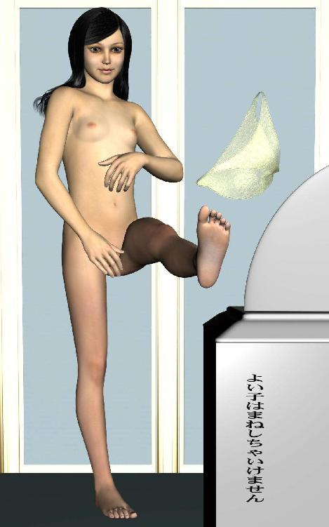
６月６日午後６時、不吉な前兆とともにその訪問者は来た。
不吉な前兆とはこうだ。
一、朝起きたらＦ子がにっこり微笑んで「Ｍ雄さん、おはよう」と言ってくれた。
二、テーブルに座ったらＳ代姉さんが目玉のある目玉焼きを食べさせてくれた。
三、二匹のおなごがそれぞれ学校と仕事で家を出たあと、Ｎ太兄さんが天井裏からおりてきてシャワーを浴びていった。
「ふう、Ｍ雄くん、久しぶりのシャワーはやっぱり気持ちいいなあ」
ついでにあちこち怪我をしていた場所に絆創膏を貼ってあげる。
「兄さん、どうしてこんなに血まみれなんです？」
「ほら、床下は狭い上に土台とか柱とかデコボコしてるだろ。夜だと明かりがなくてまっ暗闇だし、それであちこちぶつけちゃうんだな」
なるほど、参考になる話だ。
「じゃあそれで天井裏に引っ越したんですか」
「そう、天井裏のほうが広いしさ。ホコリとかも思ったより積もってないし、何より下が泥や土じゃないのが最高だね」
うんうん、それもそうだ。主張に無理がないし何より内容に説得力がある。
「それと、君らが水道の水もれをなおしちゃったから、喉が渇いちゃって」
「へえ、やっぱり水が必要なんですか」
幽霊なのに？
「そりゃそうさ、お腹もすくしね」
このひとは行方不明になってから一週間以上たっているはずだ。食べ物は我慢できたとしても、さすがに水なしではもたないから、それで洗面台の床下をぶちやぶってでてきたのか。冷蔵庫と麦茶ボトルの汚れもそのせいに違いない。
「昼だと光とかもけっこう隙間から入ってくるし、Ｓ代もどうせ死体を隠すつもりなら、最初から天井裏にしてくれればよかったのになあ」
一方的な夫婦げんかの勢いで、誤ってＮ太さんを殴り殺してしまった姉は、とりあえず死体を床下に放り込んでおいたらしい。なんの因果か地獄の亡者として生き返った兄さんは、しかしいまさら姉さんのまえに顔をだす勇気を持てず、それで床下をさまよっていたのだ。無理もない、怒ったＳ代姉さんはこわいからなあ。
「そうすると、あの水道管の水もれは、水欲しさのＮ太兄さんがＴ字管をかみ砕いたからですか？」
「いや、水は飲んでたけど、もれてたのは最初からだったよ」
ではあのかみあとは何だったんだろうと思うが、この家を施工するときついた工具あとだったのかもしれない。
シャツとパンツも新品にかえようと思ったのだが、どういうわけかＮ太兄さんの下着の場所がわからない。それで仕方なく私はＳ代姉さんのオバサンパンツを渡してあげた。嫌がるかと思ったが意外と兄さんは気にしない。さすが夫婦は一心同体だ。
「でも腹まわりがあわないでしょ？」
「いいや、伸びるから平気さ」
Ｎ太兄さんは小柄だから大丈夫のようだ。これも乳地蔵の御利益に違いない。
＊
そうして運命の午後６時、突然、玄関のドアがバタンと音立てて閉まる気配がした。なんだろうと思う間もなくピンポンとチャイムが鳴ったので私は慌てた。姉かＦ子が朝家を出るとき鍵をかけ忘れたのだ。今どき勝手に家のドアを開けて中へ入り込もうとするセールスマンにまともな輩はいまい。
焦ってドアモニターを確かめず玄関へ出ると、意に反して誰もいない。そういえばドアが閉まる音がして、しばらくしてからチャイムが鳴ったのは変だ。普通は逆だろう。
不審に思ってドアを開ければ、そこへ立っていたのはセールスマンとは微妙に違う雰囲気の硬い表情をした男だった。五十年配の小柄なスーツ姿をしていて、日本人なのに耳と鼻が妙に尖っている。何か小狡い猿のような顔つきが印象的だ。
「どうもおはようございます」
私は挨拶を返す前にその男をまじまじと見つめてしまった。きちんとネクタイをしめているからまともな人間にみえる。だが何か不審な雰囲気を感じてしまうのも否めない。
「え、突然朝早く失礼いたしました。わたくし、こちらのご主人、Ｎ太さんの会社の同僚の者でございます」
渡された名刺を確かめてみると、確かにＮ太兄さんの勤め先会社名が印刷してある。しかも役職が営業部長となっているから、おそらく同僚というよりも上司に違いない。
名前はＡ熊歳三。
しかし私は直感的に悟った。Ａ熊とは、これは、ア、ア、ア......。
「え、本日うかがわせていただきましたのは、ご主人の残された仕事の件でございまして、しばらくお時間いただいてよろしゅうございましょうか。ぜひお聞きしたい話がございまして」
家には亡者以外、生きている者は誰もいないから私一人では心もとない。姉がいるときにもう一度お越しくださいと断ればよかったのだが、相手の勢いに押されてつい後ずさってしまった。上司という言葉も気になったからだ。もし本当なら、Ｎ太兄さんの顔を潰すわけにはいかないだろう。
それで男はその隙を逃さず、するりと玄関の内側へ滑り込んでくる。
しまったと私は思ったが、ときすでに遅く、男の背後で玄関のドアが音たてて閉まった。ついでになぜかカチリと音がして、ドアノブのタブが回ってしまう。自動的に鍵までかかってしまったのだ。
これは相手が本物の上司ならいいが、もし嘘だった場合、強盗されても仕方ない非常にまずいパターンだ。
そんな私の焦りに気づいたのか気づかないのか、相手は妙な愛想笑いをその小猿のような顔に刻み込んだまま言葉を続ける。
「え、直裁に申し上げましょう。実は私どもの大事な取引先との期限が迫っておりまして、もちろんこちらのご主人Ｎ太氏の担当だったのですけれど、残念なことに突然失踪されてしまいまして、当社としてもたいへん困っているしだいでございまして、え、それでこちらのご自宅へうかがわせていただいたしだいでございます」
「......お仕事の話ですか」
仕事といわれては私も弱い。今は諸事情あってしがないニートだが、昔はちゃんとした大企業にまじめな就職をしていた。会社側の都合というものがあることくらい理解できる。私やＮ太兄さんはともかく、もしこのひとが本物の上司だった場合、取引先にも迷惑をかけて被害を大きくさせてしまうに違いない。
それで私は多少の不信感を持ちつつも、とりあえずその男を玄関横の小さな応接間へ通した。お茶を持ってこようとすると、その前に引き止められる。
「え、どうぞお構いなく。それよりもお聞きしたいのは、Ｎ太氏から何か預かっているものはないかということでございます。もしお持ちなら、今この場でお受け取りさせていただいて、取引先へ届けてしまいたいのですが、なにせ先方からも催促をいただいておりまして、今か今かと毎日のようにお電話を頂戴しているものですから」
何か話が核心に触れてきたようだ。預かっているものというよりも、この男が欲しがっているのは例のブツのことではないのか。兄さんが手に入れようとして、Ｓ代姉さんに殴り殺された因縁のしろものだ。
「いえ、何も預かってはおりませんけども」
と私は答えた。平静を装ったつもりが、少し声がうわずっていたかもしれない。相手がその目を見開いて身を乗り出してきた。
「ですがこの家にあると、わたくしはＮ太氏から聞いておりますけども」
「それは弱りましたね......」
言ったっきり、私は口をつぐんだ。本当に弱った。兄さんから大雑把な話は聞いていたけども、まさか本当に今日来るとは思わなかった。６月６日午後６時、来るのなら今日だろうとＮ太兄さんからもそう聞かされていたのに。
カルパッチョＦ子のパンツを手に入れるため、地獄から悪魔の使者がやってきたのだ。
「仕方ありません」
私はあっさりと観念した。Ｎ太兄さんは抵抗したいようだったが、問題がＦ子のパンツで済むのならこれ以上話をややこしくする必要は微塵もあるまい。
「失踪前にＮ太兄さんから聞いています。本人の部屋から、好きなだけ何枚でも持ってっちゃってください」
Ａ熊氏はニヤリと悪魔のように微笑んだ。
「ではさっそくお願いします。なに、何枚もいりません。使用済みで、なおかつ洗濯前の一枚でけっこうなんですから」
私は内心、歯噛みした。引っかからなかったようだ。いざとなればＦ子の部屋にある洗濯済みの何枚かを持たせて帰そうと思っていたのだが、未使用品や洗濯済みはいらないと、前もって釘を刺されてしまったのだ。相手は悪魔なのだから、こちらのたくらみなどお見通しなのだろう。
観念した私はいったん自分の部屋に戻り、用意しておいたパンツをベッドの下から取り出した。Ｆ子は自分の下着を自分で洗わず、風呂のとき脱ぎっぱなしたそれを洗濯機に放り込み、そのまま母親のＳ代に洗ってもらう。
今どきのおうちゃくな若い娘の、その一瞬の隙を私は突いたのだ。意図せず家庭内下着泥棒の形になってしまったが仕方ない。その代わり私はすぐそれをラップでくるんで密封した。
その前ににおいをかぐとか頭からかぶるとか自分もはいてみるとか、そういう破廉恥な行為は一切やっていなかったと断言できる。本当だ。絶対だ。嘘はついていない。本当にしていない。私は嘘つきじゃない。天地神明に誓って断じて絶対にそんな最低なことは、少しだけ、少しだけ、少しだけ試しにしてみようかと思ったが、それは思っただけでほんの一瞬だ。いや、一瞬だったとあえて過去形で言わせてもらおう。とにかくしていないのだ（絶叫）。
私は応接間へ戻り、きれいにラッピングしたＦ子のパンツを黙ってＡ熊氏の前へ置いた。対して彼はそれを両手ですくい取り、大事そうに捧げ持つ。
その儀式めいた大層な姿を目の当たりにして、しまったと私は思った。どうせラッピングしたのなら、ピンク色のリボンも結んでおけばよかった。特に意味はないが、見た目は大事だよ～。
「おお、ようやく手に入った。これで地獄の魔王さまもお喜びになられる」
瞬間、Ａ熊氏の瞳に炎の赤がきらめいた。唇が左右に耳まで裂け、壮絶な笑顔を浮かべる。こりゃ本物だ。私は正直、ちびりそうになった。悪魔が実際に存在するとは。しかも我が家に。
「若い娘の脱ぎたてパンツ。しかもラップで保存状態も完璧。さすがですな」
悪魔にほめられた私は少しうれしかった。しかし照れている場合ではない。こういう状況ではむしろ毅然とした態度をとらないと。
「それ一枚しかありません。このままお引取りください」
私は実直に頭をさげた。用が済んだのなら早く帰って欲しい。悪魔なのだから。
「おや、あなたはなぜ私がこれを欲しがっていたのか、お聞きになられないのですか？」
Ａ熊氏は不思議そうに問うが、別に聞きたくはない。男なら誰でも持っている欲望のひとつだ。聞くまでもない。
ただし、よりによってなぜＦ子の、というところが不思議といえば不思議なのだが。
「本当はお知りになりたいのに、ご遠慮なさっているのでしょう？」
Ａ熊氏はそういうが、私は別に知りたくない。それより早く帰ってください。
「せっかくですからなぜなのか、その理由をお話ししましょう」
どうも話し好きの悪魔のようだ。こちらの嫌がっているあからさまな態度を意に介さず、滔々とＦ子の脱ぎ散らかしたパンツについて話を始める。
Ａ熊氏はかたる。地獄の魔王とＦ子の染み付きパンツについての遥かなる神話を。
そう、それは神話、人類以前から始まる遠い遠い宇宙の物語だった。
「むかーし昔のことじゃった」
とＡ熊氏は語りだす。
＊
昔、この世界には何もなかった。だがこの世界より上位に存在する場所（プレーローマ）で、一人の至高神（プロパトール）が生まれた。至高神は伴侶（エレノア）とともに世代を重ね、十五対三十柱の神々（アイオーン）を誕生させた。
ところがその三十番めの女神（ソフィア）が、あるとき上位世界から絶望のあまり我々の下位世界へ身を投げてしまったのだ。（至高神を愛してしまったためである）
女神自身は門番（ホロス）の手によって助けられたのだが、そのとき彼らの手をすり抜けて落ちていったのが彼女の思い（エンテューメーシス）と情感（パトス）だった。
思い（下なるソフィアとも呼ばれる）は何もない世界にとどまり（それがつまり我々の宇宙なのだが）、さらなる情感（パトス）を脱ぎ捨てることによって苦しみから解放され、創造神（デミウルゴス）を生んだ。創造神とはつまり人間を創造した存在のことである。
ところがその創造神は自身が思い（今やアカモートと呼ばれる）から生まれたのを知らなかった。それで人間の中にアカモートの霊（プネウマ）が入り込んでしまったのにも気づかなかったのだ。
いっぽう上位世界の神々はこのような事件（女神が下位世界へ転落してしまうこと）を二度と起こさないよう、あるいはそれに対応するため、いくつかの神霊的存在を新たに生み出した。キリスト、聖霊、イエス（ソーテール）とその取り巻きであるところの天使たちである。
そしてその天使たちの初代最高位が、すなわち地獄の大魔王サタンだったのだ。
（第七話 終わり）
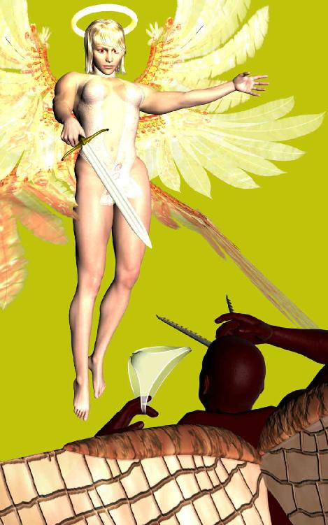
ここまで語って、Ａ熊氏はどや？ という顔をした。
「は？」
とだけ私は答えた。意味がさっぱり分からない。
「え、ですから上位神は漏れ出てしまったアカモートの霊を回収したい。もともとは上位世界のモノだったわけですからね。それでその回収係として、天使を作ったわけです。つまり上位世界とは、ぶっちゃけ天国のことなのです」
ほう、と私はあいまいな返事をした。どこかで聞いたことあるような無いような設定だな。
「で、その霊は人間一人ひとりの内側に封じられているのですが、普通、人が死んで初めて天使と合体し、天国へ帰ることができるわけです。生きている人間から強引に霊を取り上げるわけにいきませんから」
そうか、私は思い出した。これはひょっとしてグノーシス神話の一種だろうか。
グノーシスとはエジプトのナイル川中域で発見されたナグ・ハマディ文書で有名なキリスト教異端派、グノーシス派を意味する。ナグ・ハマディ文書は死海文書と並び、聖書を編纂する際、無効とされ忘れ去られたはずの外典をいくつも含んでいる。グノーシス神話はそのうちのひとつだ。
そんな話になるとは私も思わなかったが、そんな話になったのだから仕方ない。
「ところが、え、なぜかＦ子さんの霊は、生きているうちからパンツに染み出しているのです」
なんてこった。よりによってパンツとは。しかも生きてるうちから染み出してくるとは、なんというだらしない霊なんだ。Ｓ代と同じで股が緩いからだろうか。それともパンツとパトスと間違えてしまったのだろうか。
そこまで考えて、私はむしろ感心した。Ｆ子らしいといえばＦ子らしい。
「え、つまりこうです。大魔王様は神々によって地獄へ落とされ、そこへ幽閉されているのですが、実際には悪魔ではなく元天使なのですから、Ｆ子さんの染み付きパンツを手に入れてそれと合体すれば、すぐに元の天国へ帰ることができるというわけです」
なるほどと、私は片手でぽん、と膝を打った。
地獄に幽閉されている魔王は、天国へ帰れるほど価値のある霊をそこでは絶対に手に入れられない。なぜなら天使と合体できるほどの清らかな霊を持つ人間は、そもそも地獄へ落とされないだろうから。
ところがＦ子のパンツ程度なら天使に妨害されたり神々に文句を言われることなく、堂々と簡単に手に入る。それを狙ったのだ。
いやあ、大魔王は頭がいいなあ。やっぱりパンツも頭から合体するんだろうか。
「でもなぜＦ子の霊は生きてるうちから染み出してくるんですか。やっぱり性格ですか？ それとも普段の生活態度ですか？」
私の質問にＡ熊氏は答えづらい顔をした。
「え、それはわたくしどももよく分かってはおりませんのですが、人間も何百年と世代を重ねていくうちに、濃い霊を持つ者が現れてくるんですね。ほら、ナイチンゲールですとか、マザーテレサですとか、そういった歴史に名をとどめるほどの女性たちです。そういった濃い霊を持つ者はやっぱり濃いものですから、自然、生きているうちから染み出してくるわけです。彼女たちの場合、普通はオーラとしてなんですが、Ｆ子さんの場合は何千年に一人の特殊な例かと思われます」
なるほどと、私は深くうなずいた。
「わかりました。素晴らしいお話をありがとうございました。もうお引取りください」
Ａ熊氏はまだ何か話したりなそうな顔をしていたが、そろそろ引き際だと思ったのか、パンツの包みを大事そうに抱えて腰を上げた。
「え、ではたいへんお手数をおかけしました。ご主人のＮ太氏にもよろしくお伝えください。ではでは......」
Ａ熊氏は応接間の戸を自分で開け、そのまま玄関へ向かうかと思いきや、勝手にずんずんと廊下の奥へ歩き始める。ひょっとしてトイレに行きたいのかとも思ったが、そうではなく、彼が引き開けた戸は例の四畳半の物置部屋だった。
「あ、そこはトイレではありませんよ」
私の言葉を無視して、Ａ熊氏は衣装ボックスを動かし、床のカーペットをめくった。でてきたのは床下を点検するための蓋だった。Ｎ太兄さんがＳ代姉さんに殴り殺された後、黒いポリ袋へ入れられて隠されていた場所だ。
「実はここに地獄の出入り口があるのです。ときどき瘴気が漏れ出して、え、ご迷惑をおかけしてましたでしょ？」
Ａ熊氏が申し訳なさそうな顔をして言う。
瘴気が漏れてるとかそんなことには全然気がつかなかったが、ひょっとしてＳ代の異常な意地の悪さやＦ子の小憎らしさはそのせいだったか。
それどころかＮ太兄さんが地獄の亡者として生き返ったのも、実はその瘴気を浴びたせいだったのかもしれない。いや、きっとそうだ。とすると旦那を殴り殺すという姉さんの異常行為も、その瘴気とやらの......。いや違うな、あれは生まれつきの性格だ。
「え、では今度こそ本当に失礼します」
Ａ熊氏がていねいな礼をして蓋を引き開けようとしたそのとき、突然床下からそれを跳ね上げて飛び出してきた者がいる。
「え、誰ですか」
あとずさる私とＡ熊氏の前に立ち上がったのは、いつかの女配管工Ｉ美さんだった。
「Ｍ雄さん、だまされちゃダメだよ！」
ええ？ いつからそんなところに隠れてたんですか。質問したかったがそんな雰囲気ではない。Ｉ美さんとＡ熊氏は互いににらみあっている。
「もし魔王が地獄から開放されたら、悪魔たちがこの地上をめちゃくちゃにしてしまう」
Ｉ美さんが続ける。
「地獄の悪魔や亡者を監督している大魔王がいなくなって、小物らまで好き勝手始めちゃうからね。永年の恨みつらみが地の底に溜まったもの、つまり瘴気も噴出して人間世界は大混乱におちいってしまう」
「え、しかしそれでは大魔王様があまりにお可哀そうだ。もう二千年以上も地獄へ閉じ込められているのですよ。そろそろお許しになられてもよい頃では」
Ａ熊氏の言葉にもＩ美さんは耳を貸さない。
「魔王を邪魔にしているのは、本当はお前たち悪魔なんだろう。監督が厳しすぎて人間に好き勝手できないから」
「え、なるほど、そこまでご存知なあなた様はいったい何者ですかな」
瞬間、Ｉ美さんが発光した。黄金の光の中へ浮かび上がったのは六枚の翼を広げた天使の姿だ。四畳半の物置部屋で、宝塚ふうの翼が壁やらタンスやら天井やらにつっかえて窮屈そうだけど。
「え、これはこれは大天使Ｉ様のお出ましとは。ではわたくしも」
Ａ熊氏の体も一瞬で膨れ上がり、黒いゴキ＊＊の翼を広げた巨大な悪魔へと変貌する。
「む、雑魚ではなかったか。Ｇの王だったとは」
Ｉ美さんがつぶやくと同時に二つの巨体が激突する。
私は倒れこんだ廊下で腰を抜かしながら、物置部屋じゃ狭いんじゃないのとそんな二人を心配した。リアル系のＣＧアニメかハリウッド映画を大画面で見ているような迫力はあるが、光の瞬きが激しすぎてこれは部屋を明るくしてご覧くださいというパターンだ。さもないとてんかんを起こしてしまう。
見ちゃダメだ見ちゃダメだ。早く逃げないと逃げないと、と焦る私の背中へ突然黒い影がのしかかり、乱暴に肩口をわしづかまれて引き起こされた。怪力だ。
「あ、この卑怯者」
Ｉ美さんの声が向こうから聞こえるから、私をつかまえているのはＡ熊氏のほうだろう。そりゃそうだ。人間を人質にするのは悪いほうと相場が決まっている。
「え、これは申し訳ない。ちょっとだけ辛抱してください」
Ａ熊氏はなぜかすまなさそうにささやく。
「この歳で体を動かすのはたいへんなのに、やつらはお構いなしですからね。え、困ったものです」
そうして今度は声を大きくしてＩ美さんに言う。
「これ以上暴れると、この人どころか、え、この家全部が壊れてしまいますよ」
Ｉ美さんは迷っている。人一人の命と世界全部の人間の命、どちらが大切かを慮っているのだ。これがハーバード白熱教室なら真っ先に手を上げて、人一人の命は地球より重いんですと主張してアメリカ人に大爆笑されたいところだが、そういう前にすでにＩ美さんは追撃の構えをみせている。
さすが大天使、思い切りが早いなあ。アリの命と地球全部の命だとそりゃ比べるまでもないけれど、蜘蛛の糸のカンダタは、ああ、ありゃ悪人だからこそだったっけ。
Ｉ美さんが物置部屋より狭い幅の廊下で、巨大な翼を壁と天井と床につっぱらかせ、すす払いしながらこちらへ突進してくる気配を見せた瞬間、また誰かの声が私の背後から響いた。
「やめて、Ｍ雄を助けてあげて」
「そうよ、Ｍオジサン、大丈夫？」
その声はＳ代姉さんとＦ子ではないか。
「え、お二方、お早いお帰りで」
Ａ熊氏が少しうろたえた調子で言った。
玄関に並んで立っているのはまぎれもなくあの二人だ。学校帰りが不規則なＦ子はともかく、確かにＳ代の帰りはずいぶん早い。しかもこんな時間にそろって帰ってくるとは。
Ｓ代が言う。
「Ｉ美、見逃してあげて、お願い」
「お願いって言われても......」
姉の懇願に戸惑いながらも、Ｉ美さんはあっさりと変身を解いてしまった。これはどういうわけなのか。水漏れ修理のときにＳ代姉さんはいなかったのに、なぜか二人はもう顔見知りのようだ。
「さあ、あなた、早くＭ雄をおいて、行っちゃってください」
Ｓ代姉さんの言葉にＡ熊氏もニタリと笑って物置部屋へ向かう。
「え、ではお言葉に甘えまして」
Ｉ美さんは黙ってすれ違うままにしてくれる。
Ａ熊氏はその巨体を物置部屋の中へ苦労して入れると、私をそっと放してから変身を解き、素早く床下へ滑り込んだ。
「パンツをありがとうございました。いつぞやも妻と子供たちがお世話になっておりまして、あなた様にはたいへん感謝しております（第一話参照）。今回の件では大魔王様もお喜びになられましょうし、え、ではでは失礼いたします」
ていねいなお礼の言葉とともに消えていく。それっきりだ。戻ってくる気配はない。
呆然と立ちすくむ私のそばに三人がよってくる。
「やっぱり悪魔だったけど、帰ったね。あんな大物だとは思わなかったけど」
Ｉ美さんの言葉に、なぜかＳ代姉さんは不満げだ。
「話が違うじゃないの、Ｉ美、そのまま地獄に帰すって話だったのに。Ｍ雄はともかく、家が傷んじゃうじゃない」
話し方が気安い。思ったより親密だ。この二人はいったい何なのか？
「だってＧの王だったんだよ。とりあえず倒しといて損はなかったのに。放っといてもまた次の悪魔が来るだろうから、この機会を利用してできるだけ数を減らしときたかったんだ。とりあえず三十匹」
「私はこんなこともうたくさん、早く終わりにしたいの」
やっぱり姉は大天使相手にタメ口だ。
「あのー」
と私は遠慮しいしい間に割って入った。
「お取り込み中申し訳ありませんが、お二人はお知り合いなんですか？」
Ｓ代が面倒くさそうに答える。
「あんたの知ったこっちゃないの、これは女同士の話なんだから」
ああ、そういうことか。私は瞬時に理解した。
女イコール外宇宙飛来説とか、女イコール昆虫説とか、昔から男の間ではいろいろささやかれているが、これもその類のひとつで驚くには値しないのかもしれない。むしろ驚いた時点で負ける、そう私は思った。こういう場合はスルーするのが一番なのだ。
代わってＳ代ではなくＩ美さんが親切に説明してくれる。
「この家から瘴気が漏れてるのは前から気がついてたんだよ。で、水道修理を装って床下を覗いてみたら、ほら、例の噛みあとのある分岐管、あれを見てここに地獄の出入り口が隠されてるなって確信したんだ」
覚えている。ねずみにしては大きいし、大型犬が床下へ入り込むのもおかしいなと思ったやつだ。Ｎ太兄さんは最初からついてたって言ってたし、あれは悪魔の歯型だったのか。
「それでＳ代と連絡とって、今回のお芝居を考えたんだよ」
え、芝居？
「そうでなきゃ、私があんたを助けるはずないでしょ」
「そうそう、そのとおり」
Ｓ代とＦ子が口をそろえて言う。
「どういう意味ですか？」
私は姉へ謙虚に尋ねた。
「鈍い男だね。もし本物のＦ子のパンツを大魔王が手に入れたら、人類が滅びちゃうだろ。それだったらあんたの方を犠牲にしてるっての」
「じゃあ、あのパンツは？」
「偽物に決まってるじゃん」
Ｆ子が馬鹿にしたように言う。
「Ｍオジサンが盗んだ後、別の新品とすりかえておいたの」
「あんたは昔からベッドの下にエロいモノ隠す習性があるからね」
なんと、ばれていたのか。そうか、それで今朝家をでる前の二人の態度がいつもと違っていたのだ。もしパンツが偽物だとばれたら、その場で私が悪魔から八つ裂きにされてしまうかもしれない。最後の別れになるかもしれないからと、それであんなにも優しかったのだ。恐ろしい女どもだな、この二匹は。
「じゃあＩ美さんがこの部屋に隠れていたのは......」
「一応、取引現場をおさえて、本物の悪魔かどうか確認しなきゃならないからね。それで家の前で見張ってたらあいつが来たから、急いで玄関開けて物置部屋に隠れてたんだよ。その後でそこの喫茶店で待ってた二人にメールで連絡したんだ」
Ａ熊氏がチャイムを鳴らす前にドアが閉まる音がしたのは、Ｉ美さんが家へ入ってきたときのものだったのか。
「さあ、話はそれくらいにして、魔王がアレを偽物だと気づく前にこの穴をふさぐよ。だまされたと知ったら怒り狂って、子分の悪魔どもを大勢地上に解き放つはずだから。魔王自身は神々の鎖で繋がれてて出られないけど、その分よけい腹を立てるだろうし」
「でもこの穴はふさいじゃうんでしょ」
Ｆ子の疑問にＩ美さんが答える。
「この穴はね。だけどたくさんじゃないけど、穴は他にもあるんじゃないかな。大きな穴は見つけ次第ふさいでるけど、小さな穴なら世界中にいくつも残ってるみたい。私らも当分小物相手に忙しくなりそうだ」
Ｉ美さんが軽くため息をついて床下へ入り込もうとしたそのとき、
「ちょっと待った」
と誰かの声がした。
振り返れば物置部屋に入ってくるのはＮ太兄さんだ。兄さん、この部屋に五人は狭いです。
「あなた」
「お父さん」
Ｓ代とＦ子が私を突き飛ばしてＮ太兄さんにすがる。三人はぎゅうっと堅く互いを抱きしめあった。
「すまなかった、Ｓ代、Ｆ子、お父さんがふがいないばかりに」
しばらく無言で涙を流していた彼らはそれ以上何も言わなかった。Ｓ代もＦ子もパンツや悪魔の話に少しも驚かないということは、Ｎ太兄さんの事情もすでに知っているのだろう。今さら話すことは何もないのだ。
ひょっとして知らなかったのは私だけだったのかもしれない。親子の情愛、こればかりは親戚といえど他人の入り込む隙間はないからだ。Ｓ代姉さんがＮ太兄さんを殴り殺したのも、濃すぎる愛情ゆえだったのかもしれない。Ｆ子のパンツの染みと同じだ。話がややこしくなるのでもう言わないけど。
Ｎ太兄さんはオバサンパンツ一丁の毅然とした姿でＩ美さんに言う。
「僕が地獄へ入ったら、約束どおり、すぐにこの穴をふさいでください」
私は驚いた。
「ええ？ どういう意味なんですか、兄さん」
Ｎ太兄さんはふっと疲れた笑みを浮かべた。
「Ｍ雄くん、君にも世話になったね。おかげでＦ子のパンツと地球人類全部の命は守られた。お礼を言うよ」
お礼だなんて兄さん、それよりもどうして......。
「僕はもう亡者になってしまったから、どちらにせよ長くこの世にとどまってはいられないんだ。観念して僕も地獄へ行くことにしよう」
「いや、どうして地獄なんです？ Ｎ太兄さんの人柄なら、普通、天国でしょ。ねえ、Ｉ美さん」
だがＩ美さんは無言だ。彼女はＮ太兄さんを尊敬の眼差しで見つめている。大天使が一目置くとは、いったいどういう意味なんだ。
「Ｍ雄くん、地獄の悪魔や亡者はみな苦しんでるんだ。好きで悪さをしているんじゃない。苦しいからこそ安穏と生きている人間をねたみ、彼らを罠にはめて餌食にしているんだ。だからそんな彼らを救う存在こそ必要なんだよ」
Ｓ代姉さんがせきを切ったように再び泣き始めた。
「あなた、ごめんなさい......」
そんな姉さんをＦ子が優しく抱きしめる。
なき咽ぶ二人を見つめるＮ太兄さんのまなざしは、あくまでも穏やかだ。その超然とした姿はもはや亡者なぞではない。ただの人間でもない。人間以上の何かに変貌してしまったかのようだった。
兄さんは厳かにささやく。
「地獄の悪魔や亡者を救う存在、それに僕はなるつもりだ。そうすれば大魔王の怒りも少しは和らぐかもしれない」
ああ、分かった。地獄の亡者を救う存在、すなわちそれこそが地蔵菩薩なのだ。Ｎ太兄さんは地蔵菩薩、いや、乳地蔵に生まれ変わるべく巨乳のＳ代姉さんに殴り殺されたのだ、自ら進んで。
自己犠牲。
この物語のすべては最初から最後まで必然だった。
そんな話になるとは書いてる私も思わなかったけど。
「Ｍ雄くん、Ｓ代とＦ子、二人を頼む」
Ｎ太兄さん！
私は心の中で叫んだ。Ｎ太兄さんの姿がすうっと床下の地獄穴の中へ消えていく。それを見送って、私たち三人は暗闇の中へ手を伸ばした。だがもう指先は何も触れない。氷のように冷たい世界、苦しみと痛みだけが存在する地獄の世界へ、Ｎ太兄さんは自ら望んで旅立っていったのだった。
こうしてこの残酷な物語は終わりを告げる。Ｉ美さんはあれ以来姿を消し、Ｆ子とＳ代はあいかわらずの底意地の悪さを私に見せ付けてくれるが、少し優しくなった気もする。
そうして私はというと、ときどきふと思うのだ。あの人は今頃どうしているのだろうかと。
みなさんも、もし道端や山際の祠でお地蔵さまの姿を見かけたら、そのときは少しだけＮ太兄さんのことを思い出してあげてください。兄さんは今でも暗く冷たい地獄の底で、もだえ苦しむ無数の亡者たちのため、ひとり一心祈り続けているのでしょうから。
永遠に......。
（了）
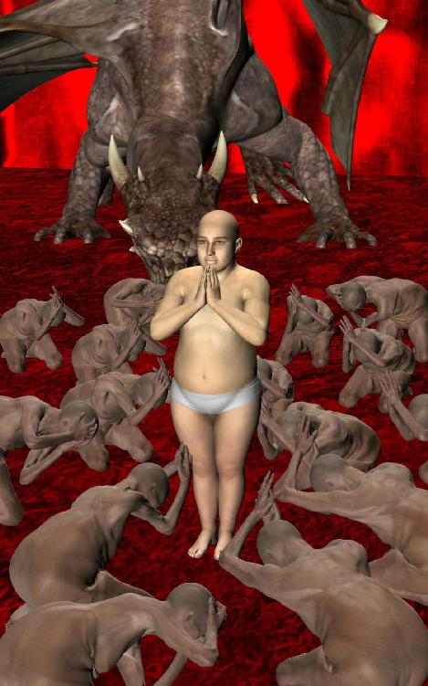
『グノーシス』筒井賢治著 講談社選書メチエ
お読みくださってありがとうございます。
この物語は第六話までと第七話以降に何年間かブランクがありますので、こんなラストになるとは私も思っておりませんでした。
ですが当初の構想と物語の結末が違ってしまうのはよくある話ですので、結果、読者のみなさまに楽しんでいただければ幸いかと思います。
なお、この小説を気に入ってくださった方は『卵いっぱいの私』（１８禁）もぜひご一読ください。登場人物やストーリーは全然別物ですが、同じコンセプトで書いた少しだけ大人向けコメディです。（１８禁というほどアダルトな内容ではありませんので、お気楽にどうぞ）
＊
それでお手数ですが、例によって感想をぜひお願いします。私の他の著作でもかまいませんのでアマゾンのコメント欄へ一言ご記入ください。
よろしくお願いいたします。
題名 Ｆ子とＭ雄
作者 片桐 樹童（きどう）
２０１４年７月 初稿完成
（第一話だけ別名義で某サイトへ発表。削除済み）
２０１４年７月 アマゾンＫＤＰへアップ
本作品の著作権は作者本人に帰属しております。
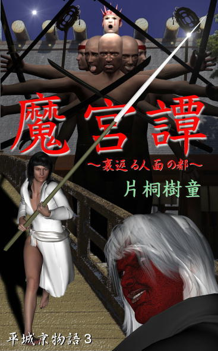
『魔宮譚 ～裏返る人面の都～』平城京物語３
古代伝奇長編小説。８５０枚。
腐肉の魔物が人面を狩る。古代史上究極の皇都・恭仁宮を襲う異国の魔神とその眷属ども。藤原氏北家の八束と吉備真備の妹・由利は、銀河の都を守れるのか。
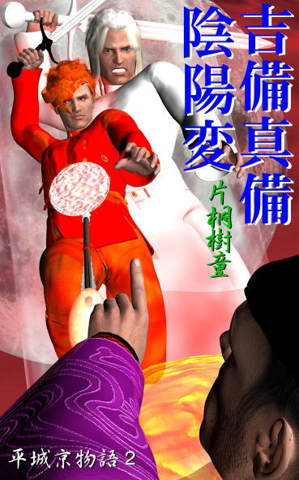
『吉備真備・陰陽変』平城京物語２
古代伝奇長編小説。７００枚。
左大臣長屋王の罪に疑問を抱いた元正上皇は、唐から帰朝した吉備真備に真相解明を依頼する。謎の美少女阿礼女とともに、真備は次々と襲い来る敵に呪禁と陰陽の秘儀で挑む。
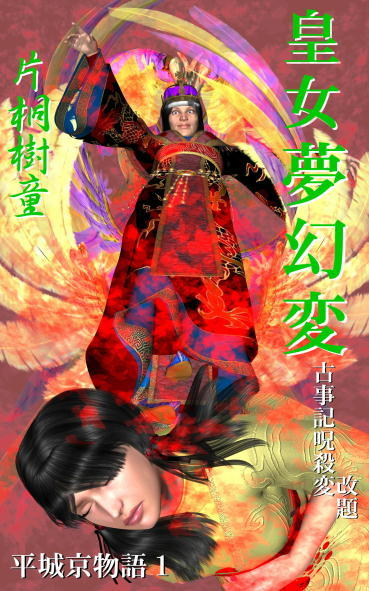
『皇女夢幻変（古事記呪殺変 改題）』平城京物語１
古代伝奇長編小説。５００枚。
和銅五年（西暦七百十二年）平城京内裏において呪われた書物「古事記」が選上された。無垢なる心の持ち主・元明女帝は、最愛の孫・首皇子の命を守れるのか。
『臨、祈り』皇女夢幻変（古事記呪殺変 改題）の前日譚。
古代短編小説。８５枚。
飛騨の山奥で祈り続ける僧のもとへ、一人の美女が訪れる。大津皇子の謀反事件の真相を問う彼女は、いったい何者なのか。
『常世虫』
古代伝奇長編小説。３２０枚。
舟形の祭壇から掘り出した娘・翠とともに、解部を装う蜂麻呂は常世の扉を開けることができるのか。作者渾身の一作！
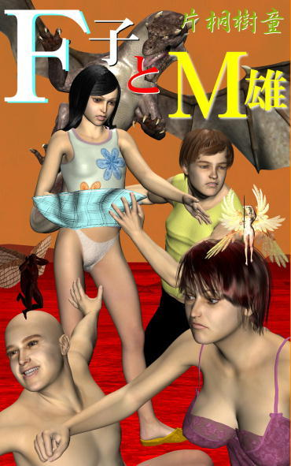
『Ｆ子とＭ雄』
ファンタジーホームコメディ短編小説。約１４０枚。
語り手の「私」ことＭ雄は、Ｆ子のパンツが巻き起こす人類滅亡の危機を目撃する。そして失踪したＮ太が現れたとき、彼が最後に選んだ行動とは......。
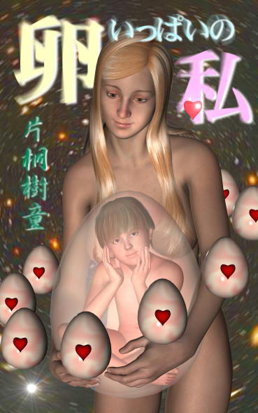
『卵いっぱいの私』
妄想コメディ中篇小説。（１８禁）２００枚。
冴えない大学生の「僕」に、なぜか夢中の美少女「リアルちゃん」。これはいったいどうしてなの？（大人向けコメディという意味での１８禁です）
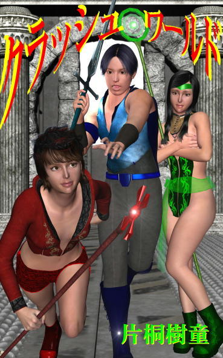
『クラッシュ・ワールド』
ヴァーチャルＳＦ長編小説。３５０枚。
ＭＭＯＲＰＧ絡みの連続自殺事件を内偵するよう依頼されたライターの「私」は、ゲーム女「トンビ」、ゲーム廃人「小町」らと、死のヴァーチャルゲーム世界へ潜入する。
『ＲＭＴ ～ロマンティック・ゲーム～』
ヴァーチャルＳＦ中編小説。２２０枚。
巨大仮想社会へ紛れ込んだ普通のＯＬアザミは、お調子者の露天商リュウとヴァーチャルデザイナーのカナちゃんに巻き込まれ、土地成金を目指すのだが。
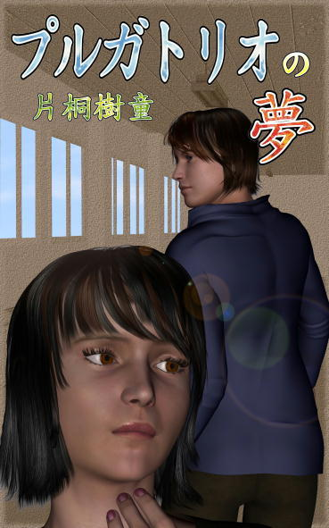
『プルガトリオの夢』
近未来ヴァーチャルＳＦ（あるいは純愛ファンタジー）中編小説。２１０枚。
プルガトリオとは煉獄のこと。末期ガンを宣告された主人公は、冷凍睡眠世界へ勧誘される。そこは夢の理想郷なのか、それとも生前犯した小さな罪を償う場所なのか。
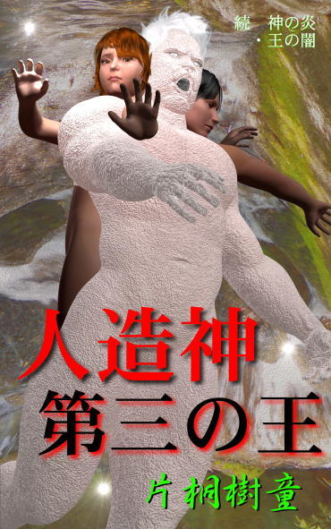
『人造神・第三の王』続 神の炎・王の闇
近未来ＳＦ長編小説。５５０枚。
壊滅後の狂った世界をさまよう二人の男女。新月として蘇った怨王は夜見速彦を自らのしもべと化し、囚われた天髪美樹は地下遺跡で眠れる人造神を発見する。
『神の炎・王の闇』
近未来ＳＦ長編小説。４８０枚。
Ｋ鉱山地下へ極秘裏に設置された秘密組織に超能力者たちが集められた。太陽と巨大彗星に潜む異形の超越存在から、地球を守るために。
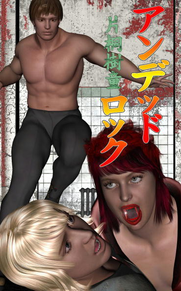
『アンデッド・ロック』
西欧ダークファンタジー中編小説。２２０枚。
舞台はおよそ百年前、イギリスの寂れた館を訪れた主人公の日本人青年は、親友の死に隠された陰謀と莫大な財宝を封じた不死錠の謎に挑む。
『眠り姫 ～バラの石の物語～』
中世ヨーロッパファンタジー長編小説。５２０枚。
孤児ブラウと異端審問官ヴァイスが、錬金術とバラの石の秘密、奇妙な惨殺事件の謎に挑む。